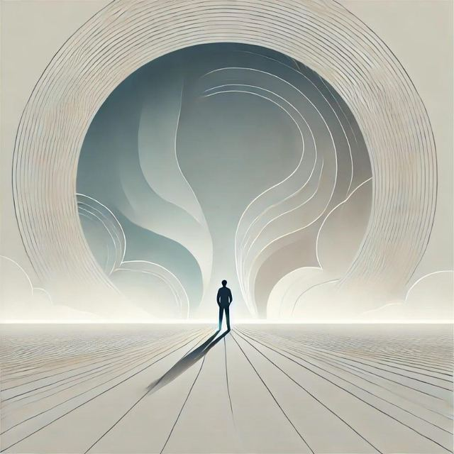

<!DOCTYPE html>
<html lang="fa" dir="rtl">
<head>
<meta charset="utf-8">
<meta name="viewport" content="width=device-width, initial-scale=1, viewport-fit=cover">
<title>همراه طرحواره</title>
<meta name="description" content="همراه طرحواره؛ شناخت و پایش روزانهٔ طرحواره‌های ناسازگار اولیه (مرکز مشاوره باورهای زیبا)">
<meta name="color-scheme" content="light dark">
<link rel="manifest" href="manifest.json">
<meta name="theme-color" content="#2f7d73">
<link rel="apple-touch-icon" href="icon-192.png">
<link rel="preload" href="Vazirmatn-Regular.woff2" as="font" type="font/woff2" crossorigin>
<style>
@font-face{font-family:Vazirmatn;font-weight:400;font-style:normal;font-display:swap;src:url(Vazirmatn-Regular.woff2) format("woff2")}
@font-face{font-family:Vazirmatn;font-weight:700 800;font-style:normal;font-display:swap;src:url(Vazirmatn-Bold.woff2) format("woff2")}

:root{
  --bg:#f6f4ef;--card:#fff;--tx:#1f2a2e;--mu:#4f5b60;--ac:#256b63;--ac2:#e3f1ee;--bd:#e2ded5;
  --warm:#a0523a;--warm2:#faeae3;--calm:#3d5f94;--calm2:#ecf0f7;
  --crisis-bd:#c47a55;--crisis-bg:#fdf0ea;
  --fs-body:16px;--fs-h1:21px;--fs-h2:15.5px;--fs-h3:14.5px;
  --fs-nm:15.5px;--fs-df:14px;--fs-sub:14px;--fs-note:13px;--fs-tiny:12px;
  --fs-nav:12px;--fs-chip:14px;--fs-tag:13px;--fs-crisis:14px;
  --fs-summary:15px;--fs-summary-sub:13px;
  box-sizing:border-box
}
[data-fs="lg"]{
  --fs-body:17.5px;--fs-h1:24px;--fs-h2:17.5px;--fs-h3:16.5px;
  --fs-nm:17.5px;--fs-df:15.5px;--fs-sub:15.5px;--fs-note:14.5px;--fs-tiny:13.5px;
  --fs-nav:13px;--fs-chip:15.5px;--fs-tag:14.5px;--fs-crisis:15.5px;
  --fs-summary:16.5px;--fs-summary-sub:14.5px;
}
[data-fs="xl"]{
  --fs-body:19.5px;--fs-h1:27px;--fs-h2:20px;--fs-h3:19px;
  --fs-nm:19.5px;--fs-df:17.5px;--fs-sub:17.5px;--fs-note:16.5px;--fs-tiny:15.5px;
  --fs-nav:13.5px;--fs-chip:17.5px;--fs-tag:16.5px;--fs-crisis:17.5px;
  --fs-summary:18.5px;--fs-summary-sub:16.5px;
}
@media (prefers-color-scheme:dark){:root:not([data-theme="light"]){--bg:#141b1d;--card:#1d2629;--tx:#e8eeef;--mu:#a8b8bc;--ac:#5cc2b3;--ac2:#1f3a37;--bd:#2d3a3d;--warm:#d68a6a;--warm2:#2c1e18;--calm:#7fa3d1;--calm2:#1d2837;--crisis-bd:#7a4a33;--crisis-bg:#2a1c16}}
:root[data-theme="dark"]{--bg:#141b1d;--card:#1d2629;--tx:#e8eeef;--mu:#a8b8bc;--ac:#5cc2b3;--ac2:#1f3a37;--bd:#2d3a3d;--warm:#d68a6a;--warm2:#2c1e18;--calm:#7fa3d1;--calm2:#1d2837;--crisis-bd:#7a4a33;--crisis-bg:#2a1c16}
*{box-sizing:border-box}
body{margin:0;background:var(--bg);color:var(--tx);font-family:Vazirmatn,Tahoma,system-ui,sans-serif;font-size:var(--fs-body);line-height:1.85;padding-bottom:88px;padding-top:env(safe-area-inset-top,0px)}
main{max-width:640px;margin:auto;padding:16px}
h1{font-size:var(--fs-h1);margin:4px 0 2px;font-weight:800;line-height:1.4}
h2{font-size:var(--fs-h2);color:var(--ac);margin:20px 0 6px;font-weight:700}
h3{font-size:var(--fs-h3);color:var(--ac);margin:16px 0 4px;font-weight:700}
.sub{color:var(--mu);font-size:var(--fs-sub);margin:0 0 12px}
.card{background:var(--card);border:1px solid var(--bd);border-radius:16px;padding:14px 16px;margin:10px 0;box-shadow:0 1px 2px rgba(0,0,0,.03),0 4px 14px rgba(0,0,0,.02);transition:box-shadow .22s ease,border-color .22s ease}
.card:hover{box-shadow:0 2px 6px rgba(0,0,0,.05),0 10px 28px rgba(0,0,0,.05)}
.row{display:flex;align-items:center;justify-content:space-between;gap:8px}
.nm{font-weight:700;font-size:var(--fs-nm)}
.df{color:var(--mu);font-size:var(--fs-df)}
button{font:inherit;font-size:var(--fs-chip);cursor:pointer;border:1px solid var(--bd);background:var(--card);color:var(--tx);border-radius:12px;padding:8px 14px;transition:background .15s,transform .1s}
button:active{transform:scale(.97)}
button.on{background:var(--ac);color:#fff;border-color:var(--ac)}
button.primary{padding:14px 24px;font-size:calc(var(--fs-body) * 1.06);font-weight:700;width:100%;background:linear-gradient(135deg,var(--ac) 0%,#1e5d55 100%);color:#fff;border-color:var(--ac);box-shadow:0 4px 14px rgba(37,107,99,.18);transition:transform .12s,box-shadow .22s}
button.primary:hover{box-shadow:0 6px 20px rgba(37,107,99,.25)}
button.ghost{background:none;border:1px dashed var(--bd);color:var(--mu)}
.tag{display:inline-block;background:var(--ac2);color:var(--ac);border-radius:8px;padding:1px 9px;font-size:var(--fs-tag);font-weight:600}
.sec b{display:block;color:var(--ac);font-size:var(--fs-df);margin-top:10px}
nav{position:fixed;bottom:0;left:0;right:0;display:flex;background:var(--card);border-top:1px solid var(--bd);padding-bottom:env(safe-area-inset-bottom,0px);z-index:10}
nav button{flex:1;border:0;border-radius:0;background:none;padding:10px 3px;font-size:var(--fs-nav);display:flex;flex-direction:column;align-items:center;gap:3px;line-height:1.25;color:var(--mu)}
nav button.act{color:var(--ac);font-weight:700}
nav svg{flex:none}
.note{font-size:var(--fs-note);color:var(--mu);margin-top:16px}
.chips{display:flex;flex-wrap:wrap;gap:6px;margin:6px 0 12px}
.chips button{border-radius:20px;padding:6px 14px;font-size:var(--fs-chip);transition:background .15s,transform .1s}
.chips button:hover:not(.on){background:var(--ac2)}
.cl{display:-webkit-box;-webkit-line-clamp:2;-webkit-box-orient:vertical;overflow:hidden}
.cope h4{color:var(--ac);font-size:var(--fs-df);margin:12px 0 2px}
.cope p{margin:2px 0;font-size:var(--fs-df)}
details.card{padding:0;overflow:hidden;border-color:var(--warm)}
details.card>summary{padding:14px 16px;background:var(--warm2);color:var(--warm);cursor:pointer;list-style:none;outline:none;font-weight:700;font-size:var(--fs-summary);line-height:1.55;position:relative;padding-left:44px}
details.card>summary::-webkit-details-marker{display:none}
details.card>summary::after{content:'+';position:absolute;left:16px;top:50%;transform:translateY(-50%);font-size:22px;color:var(--warm);font-weight:400;line-height:1}
details.card[open]>summary{background:var(--warm);color:#fff}
details.card[open]>summary::after{content:'−';color:#fff}
details.card>summary .summary-sub{display:block;font-weight:400;font-size:var(--fs-summary-sub);color:var(--mu);margin-top:3px}
details.card[open]>summary .summary-sub{color:rgba(255,255,255,.92)}
details.card>.details-body{padding:12px 16px 14px}
.prhead{display:none}
@media print{nav,button,.noprint,.note{display:none!important}.prhead{display:block;text-align:center;margin-bottom:8px}body{background:#fff;color:#000;padding:0}.card{break-inside:avoid;border-color:#ccc}}
.crisis{margin-top:14px;padding:10px 12px;border:1px solid var(--crisis-bd);border-radius:12px;background:var(--crisis-bg);font-size:var(--fs-crisis);color:var(--tx)}
.crisis a{color:var(--warm);font-weight:700}
@media print{.crisis{display:none}}
.grid{display:grid;grid-template-columns:1fr 1fr;gap:10px;margin-top:10px}
.tile{display:flex;flex-direction:column;align-items:center;gap:8px;padding:22px 8px;border-radius:18px;font-size:var(--fs-chip);background:var(--card);border:1px solid var(--bd);color:var(--ac);text-align:center;transition:transform .18s ease,box-shadow .22s ease,background .2s}
.tile:hover{transform:translateY(-2px);box-shadow:0 6px 20px rgba(0,0,0,.06)}
.tile span{color:var(--tx);font-weight:600}
@keyframes fadeUp{from{opacity:0;transform:translateY(6px)}to{opacity:1;transform:translateY(0)}}
.anim{animation:fadeUp .35s ease-out both}
@keyframes popIn{0%{transform:scale(.6);opacity:0}70%{transform:scale(1.08)}100%{transform:scale(1);opacity:1}}
.toast{position:fixed;bottom:96px;left:50%;transform:translateX(-50%);background:var(--tx);color:var(--bg);padding:10px 20px;border-radius:24px;font-size:var(--fs-df);z-index:100;animation:popIn .3s ease-out;max-width:90vw;text-align:center;line-height:1.7}
.slider-wrap{padding:6px 4px}
input[type=range]{width:100%;accent-color:var(--ac);height:6px}
.mood-grid{display:flex;justify-content:space-between;gap:4px;margin:8px 0}
.mood-grid button{flex:1;font-size:26px;padding:8px 0;border-radius:14px;background:var(--card);border:1px solid var(--bd);line-height:1}
.mood-grid button.sel{background:var(--ac2);border-color:var(--ac);transform:scale(1.08)}
.streak-badge{display:inline-flex;align-items:center;gap:5px;background:var(--ac2);color:var(--ac);border-radius:20px;padding:3px 12px;font-size:var(--fs-tag);font-weight:700;box-shadow:0 2px 8px rgba(37,107,99,.12)}
.heat{display:grid;grid-template-columns:repeat(7,1fr);gap:4px;margin-top:8px}
.heat i{display:block;aspect-ratio:1;border-radius:4px;background:var(--ac2);opacity:.5}
.heat i.has{background:var(--ac);opacity:.9}
.insight{border-right:4px solid var(--calm);padding:8px 12px;background:var(--calm2);border-radius:10px;font-size:var(--fs-df);margin:10px 0;color:var(--tx)}
.small-caps{font-size:var(--fs-tiny);color:var(--mu);font-weight:700}
.icon-btn{background:var(--card);border:1px solid var(--bd);width:40px;height:40px;border-radius:12px;padding:0;display:inline-flex;align-items:center;justify-content:center;color:var(--mu);cursor:pointer;flex:none}
.icon-btn:active{transform:scale(.97)}
.icon-btn:hover{color:var(--ac);border-color:var(--ac)}
.set-row{display:flex;align-items:center;gap:10px;width:100%;text-align:right;padding:12px 14px;border-radius:12px;border:1px solid var(--bd);background:var(--card);color:var(--tx);margin:6px 0;cursor:pointer;font:inherit;font-size:var(--fs-nm)}
.set-row.on{background:var(--ac2);border-color:var(--ac)}
.set-inner{flex:1;text-align:right}
.set-title{font-weight:700;display:block}
.set-desc{font-size:var(--fs-df);color:var(--mu);display:block;margin-top:2px}
.set-check{color:var(--ac);font-weight:800;font-size:18px;flex:none}
.lead{font-size:calc(var(--fs-body) * 1.06);font-weight:600}
.h1-hero{font-size:calc(var(--fs-h1) * 1.2);background:linear-gradient(135deg,var(--ac),var(--calm));-webkit-background-clip:text;background-clip:text;color:transparent}
.wel-hero-quote{font-family:Vazirmatn,Tahoma;font-weight:800;letter-spacing:.5px}
.q-title{font-size:calc(var(--fs-h1) * 0.94);line-height:1.85;font-weight:700}
.big-num{font-size:calc(var(--fs-h1) * 1.08);font-weight:800;line-height:1.2;color:var(--tx)}
.emoji-lg{font-size:2.8em;line-height:1}
.test-opt{width:100%;text-align:right;padding:14px 16px;font-size:var(--fs-chip);border-radius:12px;margin:0;transition:background .15s,transform .12s,border-color .15s}
.test-opt:hover:not(.sel){border-color:var(--ac);color:var(--ac)}
.test-opt.sel{background:var(--ac2);border-color:var(--ac);color:var(--ac);font-weight:700}
.bar{height:8px;background:var(--ac2);border-radius:4px;overflow:hidden}
.bar>div{height:100%;background:var(--ac);border-radius:4px;transition:width .3s}
.bar.warm>div{background:var(--warm)}
.intro-cta{padding:18px 24px;font-size:calc(var(--fs-body) * 1.12);line-height:1.7;font-weight:800}
.intro-def{line-height:2;text-align:justify}
.journey-h{font-size:calc(var(--fs-h1) * 1.06);line-height:1.8;font-weight:700;color:var(--ac);margin:0;text-align:center}
:focus-visible{outline:2px solid var(--ac);outline-offset:2px}

/* --- پرداخت نهایی برای انتشار --- */
html{scroll-behavior:smooth;-webkit-text-size-adjust:100%}
button,summary,a,label{-webkit-tap-highlight-color:transparent}
button{touch-action:manipulation}
:focus-visible{outline:3px solid var(--ac);outline-offset:2px;border-radius:8px}
.card{box-shadow:0 1px 2px rgba(0,0,0,.04),0 8px 20px -12px rgba(0,0,0,.14)}
@media (prefers-reduced-motion:reduce){*{animation:none!important;transition:none!important;scroll-behavior:auto!important}}
@media print{nav,#nav,.toast{display:none!important}body{padding:0;background:#fff}.card{box-shadow:none;break-inside:avoid}}
</style>
</head>
<body>
<main id="app"></main>
<nav id="nav"></nav>
<script src="config.js"></script>
<script>
/* =====================================================================
   داده‌ها — ۱۸ طرحواره در ۵ حوزه
   ===================================================================== */
const D=[["بریدگی و طرد", [{"n": "رهاشدگی / بی‌ثباتی", "en": "Abandonment / Instability", "d": "باور عمیق و آزاردهنده به اینکه افراد مهم زندگی‌تان در نهایت ترکتان می‌کنند یا نمی‌توان به آن‌ها تکیه کرد. این طرحواره در حوزه بریدگی و طرد (Disconnection and Rejection) قرار می‌گیرد و اغلب با اضطراب جدایی، بی‌اعتمادی و ترس از تنهایی همراه است.", "f": "تجربه رابطه ناپایدار با مراقبان (Caregivers) در کودکی؛ جدایی یا فقدان زودهنگام؛ حضور فیزیکی بدون حضور هیجانی یا عدم دسترسی هیجانی (Emotional Unavailability). کودک در چنین فضایی می‌آموزد که نزدیکی امن نیست و عشق ماندگار نیست.", "t": "تأخیر در پاسخ به پیام، سفر یا دوری شریک، نشانه‌های کوچک سردی یا فاصله گرفتن. هر موقعیتی که احساس نزدیکی را تهدید کند، می‌تواند این طرحواره را روشن کند.", "p": "ذهن نشانه‌های کوچک را به‌سرعت به «او دارد ترکم می‌کند» تعبیر می‌کند. حتی یک تغییر جزئی در لحن یا زمان پاسخ، به شواهدی برای ترک‌شدن تبدیل می‌شود.", "e": "اضطراب، ترس، دلتنگی شدید، احساس تنهایی و گاه خشم. گویی خطر واقعی است و بدن آماده فرار یا چنگ زدن می‌شود.", "b": "چسبندگی (Clinging)، کنترل‌گری، نیاز مکرر به اطمینان، یا پس زدن زودهنگام طرف مقابل پیش از آنکه او ترک کند. این رفتارها در لحظه از درد می‌کاهند، اما در بلندمدت رابطه را فرسوده می‌کنند.", "m": "پیش از واکنش، شواهد موافق و مخالف را بنویسید. از خود بپرسید: «چه مدرک واقعی برای ترک‌شدن دارم؟ چه مدرک مخالفی وجود دارد؟»<br>نیازتان را مستقیم و آرام بیان کنید؛ مثلاً بگویید: «وقتی دیر جواب می‌دهی، مضطرب می‌شوم. اگر ممکن است به من خبر بدهی.»<br>به خودتان مهربان باشید. این ترس، زخم قدیمی است، نه ضعف شخصی. هر بار که آگاهانه انتخاب می‌کنید، طرحواره کمی ضعیف‌تر می‌شود.", "note": "طرحواره رهاشدگی در کودکی برای محافظت از شما شکل گرفته است؛ بنابراین سرزنش کردن خود بابت آن فایده‌ای ندارد. آنچه مهم است، شناخت فعال‌سازها و انتخاب راه سالم به‌جای واکنش خودکار است.", "Q": {"trig": ["زمانی که پیامم بی‌پاسخ ماند یا دیر جواب گرفتم", "زمانی که شریکم به سفر رفت یا از من دور شد", "زمانی که نشانه‌های سردی در رفتار او دیدم", "زمانی که تنها در خانه بودم و کسی نبود", "زمانی که با کسی تعارض پیدا کردم", "زمانی که از کسی انتقاد شنیدم", "زمانی که خودم را با دیگران مقایسه کردم", "زمانی که به یاد فقدان یا جدایی گذشته افتادم", "زمانی که احساس کردم کسی مرا نمی‌خواهد", "موقعیت دیگر"], "feel": ["اضطراب جدایی", "ترس از ترک شدن", "دلتنگی شدید", "احساس تنهایی عمیق", "احساس ناامنی", "غم", "خشم", "وحشت", "شرم", "گناه"], "beh": ["بی‌دلیل شروع به گریه کردم", "مکرر به او پیام دادم", "مکرر به او زنگ زدم", "خودخوری کردم و فکر بد کردم", "چسبندگی (Clinging)", "کنترل‌گری", "پس‌زدن زودهنگام طرف مقابل", "اجتناب کردم", "با خودم کلنجار رفتم", "بهانه‌ای برای تماس پیدا کردم"], "used": ["پیش از واکنش، شواهد موافق و مخالف را نوشتم", "نیازم را مستقیم و آرام بیان کردم", "به خودم مهربان بودم", "کاری نکردم"], "plan": ["پیش از واکنش، شواهد موافق و مخالف را بنویسم", "نیازم را مستقیم و آرام بیان کنم", "به خودم مهربان باشم", "گفتگو با درمانگر", "نوشتن افکارم", "تمرین ذهن‌آگاهی"]}}, {"n": "بی‌اعتمادی / بدرفتاری", "en": "Mistrust / Abuse", "d": "انتظار پایدار و عمیق به اینکه دیگران در نهایت به من آسیب می‌زنند، خیانت می‌کنند یا از من سوءاستفاده می‌کنند. فرد به‌جای اعتماد، آماده دفاع و پیشگیری از آسیب است و نزدیکی را با خطر پیوند می‌زند.", "f": "تجربه آزار جسمی، جنسی یا هیجانی، تحقیر، خیانت یا بی‌وفایی در کودکی یا روابط مهم. کودک می‌آموزد که «نزدیکی یعنی خطر». گاهی مراقب در ظاهر مهربان است اما در لحظه‌ای حساس آسیب می‌زند، وعده می‌دهد و عمل نمی‌کند، یا محبتش غیرقابل پیش‌بینی است.", "t": "صمیمیت، وابستگی به دیگری، موقعیت‌های مبهم، اعتماد کردن، یا حتی وقتی کسی بیش از حد مهربان است. هر موقعیتی که فرد را آسیب‌پذیر می‌کند، می‌تواند این طرحواره را روشن کند.", "p": "قصد دیگران بدخواهانه تفسیر می‌شود. نیت‌های خنثی یا مهربان، پنهان‌کارانه یا فریب‌کارانه دیده می‌شوند. ذهن به‌دنبال شواهد خیانت، سوءاستفاده یا طرد می‌گردد.", "e": "هوشیاری مفرط (Hypervigilance)، خشم، ترس، بی‌قراری و احساس تهدید. بدن در حالت آماده‌باش می‌ماند و آرامش دشوار می‌شود.", "b": "فاصله گرفتن، آزمودن دیگران، سرد شدن، پیش‌دستی در حمله، کنترل‌گری، یا ترک رابطه پیش از آنکه آسیب ببیند. این رفتارها در لحظه محافظت‌کننده‌اند، اما در بلندمدت صمیمیت را محدود می‌کنند.", "m": "اعتماد را تدریجی و آزمون‌پذیر تمرین کنید؛ نه یک‌باره و نه هرگز. فرض‌های ذهنی را با واقعیت بسنجید: چه شواهدی برای بدخواهی طرف مقابل دارم؟ چه شواهدی خلاف آن وجود دارد؟<br>مرزهای سالم بگذارید و در عین حال اجازه بدهید اعتماد در رفتارهای کوچک، قابل پیش‌بینی و تکرارشونده ساخته شود.<br>با خودتان مهربان باشید؛ این بی‌اعتمادی زخم قدیمی است، نه حکم قطعی درباره همه.", "note": "هدف این نیست که به همه اعتماد کنید؛ هدف این است که بتوانید بین خطر واقعی و زخم قدیمی تمایز بگذارید. هر بار که این تمایز را ببینید، یک قدم از طرحواره فاصله گرفته‌اید.", "Q": {"trig": ["زمانی که کسی به من نزدیک شد و صمیمی شد", "زمانی که به کسی اعتماد کردم", "زمانی که کسی بیش از حد مهربان بود", "زمانی که در موقعیت مبهم یا ناشفاف قرار گرفتم", "زمانی که کسی از من درخواستی کرد", "زمانی که کسی به من محبت کرد و شک کردم", "زمانی که با کسی صمیمی شدم", "زمانی که کسی مرا تحسین کرد", "زمانی که شریکم دیر جواب داد و بدگمان شدم", "موقعیت دیگر"], "feel": ["بدگمانی", "خشم", "ترس", "هوشیاری مفرط (Hypervigilance)", "احساس تهدید", "بی‌قراری", "اضطراب", "شرم", "گناه"], "beh": ["فاصله گرفتم", "طرف مقابل را آزمودم", "پیش‌دستی در حمله کردم", "سرد شدم", "کنترل‌گری کردم", "رابطه را ترک کردم", "اجتناب کردم", "با خودم کلنجار رفتم", "به دیگری بدگمان شدم", "اطلاعات جمع کردم تا مطمئن شوم"], "used": ["اعتماد را تدریجی و آزمون‌پذیر تمرین کردم", "فرض‌های ذهنی‌ام را با واقعیت سنجیدم", "مرز سالم گذاشتم", "کاری نکردم"], "plan": ["اعتماد را تدریجی و آزمون‌پذیر تمرین کنم", "فرض‌های ذهنی‌ام را با واقعیت بسنجم", "مرز سالم بگذارم", "گفتگو با درمانگر", "نوشتن افکارم", "تمرین ذهن‌آگاهی"]}}, {"n": "محرومیت هیجانی", "en": "Emotional Deprivation", "d": "باور عمیق و آزاردهنده به اینکه نیازهای هیجانی اصلی‌ام — محبت، همدلی، حمایت و محافظت — هرگز به‌طور واقعی برآورده نمی‌شوند. فرد انتظار دارد در لحظه‌های نیاز، کسی نباشد که واقعاً بفهمد، همراهی کند یا او را در آغوش بگیرد. این طرحواره معمولاً سه شکل دارد: محرومیت از محبت و پرورش هیجانی (Nurturance)، محرومیت از همدلی (Empathy)، و محرومیت از حمایت و محافظت (Protection).", "f": "مراقبان سرد، بی‌توجه، غایب هیجانی، یا درگیر مشکلات خود. ممکن است نیازهای مادی کودک فراهم بوده باشد، اما محبت، همدلی و حمایت هیجانی دریافت نشده است. کودک در چنین فضایی می‌آموزد که نیاز داشتن بی‌فایده، خطرناک یا مایه شرم است.", "t": "وقتی نیازمندم و کسی حاضر نیست؛ احساس نادیده‌شدن؛ وقتی کسی محبت می‌کند اما باور نمی‌کنم که ماندگار باشد؛ یا در لحظه‌های تنهایی و فشار هیجانی.", "p": "ذهن می‌گوید: «کسی واقعاً مرا نمی‌فهمد»، «هیچ‌کس نیست که به او تکیه کنم»، «محبت واقعی وجود ندارد.» حتی توجه دیگران هم بی‌ارزش یا نمایشی دیده می‌شود.", "e": "تنهایی، خلأ، غم، دلتنگی، و گاه خشم پنهان. ممکن است فرد احساس کند درونش خالی است و هیچ‌چیز آن خلأ را پر نمی‌کند.", "b": "نخواستن کمک، کنار کشیدن از رابطه، یا انتخاب افراد سرد و دست‌نیافتنی. گاهی نیز جبران افراطی رخ می‌دهد: بیش از حد دادن به دیگران تا نیاز خود را انکار کند. در برخی موارد، پناه بردن به غذا، الکل، اینترنت یا کار زیاد برای پر کردن خلأ هیجانی دیده می‌شود.", "m": "نیازتان را بشناسید و نام‌گذاری کنید: «من الان به همدلی نیاز دارم.» سپس صریح و آرام درخواست کنید. به تأمین‌کنندگان واقعی محبت اجازه نزدیک‌شدن بدهید و به‌تدریج اعتماد کنید. با خودتان مهربان باشید؛ نیاز داشتن ضعف نیست، نشانه زنده‌بودن است.", "note": "این طرحواره اغلب ریشه در کمبودهای واقعی کودکی دارد، نه در پرتوقع بودن شما. هدف، نه انکار نیاز، بلکه یادگیری این است که نیازتان را ببینید، بیان کنید و از منابع سالم تغذیه کنید. هر بار که این کار را می‌کنید، یک قدم از طرحواره فاصله گرفته‌اید.", "Q": {"trig": ["زمانی که نیاز به محبت داشتم و کسی نبود", "زمانی که در جمع احساس نادیده گرفته شدن کردم", "زمانی که کسی از من دلجویی نکرد", "زمانی که تنها بودم و کسی نبود که با او حرف بزنم", "زمانی که از کسی درخواست کمک کردم و پاسخ نگرفتم", "زمانی که بیمار یا ناراحت بودم و کسی نبود", "زمانی که در موقعیت دشواری بودم و کسی درکم نکرد", "زمانی که کسی محبت کرد اما باور نکردم", "موقعیت دیگر"], "feel": ["احساس خلأ", "تنهایی", "غم", "دلتنگی", "احساس درک نشدن", "خشم پنهان", "شرم", "اضطراب", "احساس بی‌ارزشی"], "beh": ["کمک نخواستم", "از رابطه کنار کشیدم", "به سراغ افراد سرد رفتم", "پرخوری کردم", "ساعت‌ها در اینترنت گشتم", "خودم را با کار زیاد مشغول کردم", "اجتناب کردم", "با خودم کلنجار رفتم", "به دیگری چسبیدم"], "used": ["نیازم را شناختم و نام‌گذاری کردم", "نیازم را صریح و آرام درخواست کردم", "به تأمین‌کنندگان واقعی محبت اجازه نزدیک‌شدن دادم", "کاری نکردم"], "plan": ["نیازم را بشناسم و نام‌گذاری کنم", "نیازم را صریح و آرام درخواست کنم", "به تأمین‌کنندگان واقعی محبت اجازه نزدیک‌شدن بدهم", "گفتگو با درمانگر", "نوشتن افکارم", "تمرین ذهن‌آگاهی"]}}, {"n": "انزوای اجتماعی / بیگانگی", "en": "Social Isolation / Alienation", "d": "احساس عمیق و آزاردهنده به اینکه با بقیه دنیا متفاوتم، به هیچ گروهی تعلق ندارم و در نهایت تنها می‌مانم. فرد خود را «بیرون از جمع» می‌بیند، حتی وقتی در میان دیگران است. این طرحواره با احساس بی‌گانگی، طردشدگی و «جای من اینجا نیست» همراه است.", "f": "تجربه طرد شدن توسط همسالان، تفاوت‌های واقعی با خانواده یا هم‌سن‌ها (مثل علایق، ظاهر، یا پیشینه فرهنگی)، یا خانواده‌ای که خودش منزوی و بسته بوده است. گاهی کودک در خانواده‌ای «متفاوت» بزرگ می‌شود و می‌آموزد که هیچ‌جا جای او نیست.", "t": "ورود به جمع جدید، احساس نادیده گرفته شدن در گروه، موقعیت‌هایی که فرد «کنار» می‌ماند، یا حتی وقتی کسی در حال لذت بردن از جمع است و فرد خود را جدا می‌بیند.", "p": "ذهن می‌گوید: «من با دیگران فرق دارم»، «هیچ‌کس مرا نمی‌فهمد»، «من به هیچ‌جا تعلق ندارم.» تفاوت‌های کوچک به دیوارهای بزرگ تبدیل می‌شوند.", "e": "تنهایی، غم، شرم از «متفاوت بودن»، اضطراب اجتماعی و گاه خشم پنهان نسبت به گروهی که فرد را نپذیرفته است.", "b": "کناره‌گیری از جمع، سکوت در گروه‌ها، اجتناب از موقعیت‌های اجتماعی، یا در مقابل، تلاش افراطی برای «شبیه شدن» به دیگران و انکار تفاوت‌های واقعی خود.", "m": "تفاوت‌های واقعی‌تان را بپذیرید و آن‌ها را ضعف نبینید. به‌جای تلاش برای «شبیه شدن»، به دنبال گروه‌ها و افرادی باشید که تفاوتتان را ارزش بدانند. به‌تدریج و در قدم‌های کوچک، حضور در جمع را تمرین کنید، بدون اینکه خودتان را پنهان کنید. با خودتان مهربان باشید؛ احساس تعلق یک مهارت است، نه یک ویژگی ذاتی.", "note": "هدف این نیست که خودتان را تغییر بدهید تا جا بیفتید؛ هدف این است که جایی را پیدا کنید که خود واقعی‌تان در آن جا بیفتد. هر بار که خودتان را پنهان نمی‌کنید، یک قدم از این طرحواره فاصله گرفته‌اید.", "Q": {"trig": ["زمانی که وارد جمع جدیدی شدم", "زمانی که در گروهی احساس نادیده گرفته شدن کردم", "زمانی که دیدم دیگران با هم صمیمی‌اند و من بیرون ماندم", "زمانی که در مهمانی بودم و کسی با من حرف نزد", "زمانی که در جمع سکوت کردم", "زمانی که خودم را با دیگران مقایسه کردم", "زمانی که احساس کردم با بقیه فرق دارم", "موقعیت دیگر"], "feel": ["احساس تعلق نداشتن", "تنهایی", "شرم از «متفاوت بودن»", "اضطراب اجتماعی", "غم", "خشم پنهان", "احساس بی‌گانگی", "بی‌قراری"], "beh": ["از جمع کناره گرفتم", "در گروه سکوت کردم", "از موقعیت‌های اجتماعی اجتناب کردم", "تلاش کردم شبیه دیگران شوم", "خودم را پنهان کردم", "اجتناب کردم", "با خودم کلنجار رفتم", "زودتر از جمع بیرون آمدم"], "used": ["تفاوت‌هایم را پذیرفتم", "به دنبال گروه‌ها و افرادی رفتم که تفاوتم را ارزش بدانند", "حضور در جمع را در قدم‌های کوچک تمرین کردم", "کاری نکردم"], "plan": ["تفاوت‌هایم را بپذیرم", "به دنبال گروه‌ها و افرادی بروم که تفاوتم را ارزش بدانند", "حضور در جمع را در قدم‌های کوچک تمرین کنم", "گفتگو با درمانگر", "نوشتن افکارم", "تمرین ذهن‌آگاهی"]}}, {"n": "نقص / شرم", "en": "Defectiveness / Shame", "d": "باور عمیق و دردناک به اینکه درون من معیوب، ناقص، بی‌ارزش یا «خراب» است. فرد احساس می‌کند اگر دیگران واقعاً او را بشناسند، طردش می‌کنند. این طرحواره از عمیق‌ترین الگوهای شناختی است و اغلب با شرم شدید همراه است.", "f": "تجربه سرزنش مکرر، تحقیر، مقایسه با دیگران، یا انتقاد شدید از سوی والدین یا مراقبان. گاهی کودک یاد می‌گیرد که «هر چه هست، کافی نیست» و این باور را درونی می‌کند که نقص در خودش است، نه در محیط.", "t": "انتقاد، شکست، طرد شدن، یا حتی موفقیت (چون موفقیت هم می‌تواند تهدیدکننده باشد و فرد را در معرض «دیده شدن» قرار دهد). موقعیت‌هایی که فرد در مرکز توجه است، می‌توانند این طرحواره را روشن کنند.", "p": "ذهن خود را در مهم‌ترین جنبه‌های شخصیت، ناقص و بی‌ارزش می‌بیند. فرد انتظار طرد و سرزنش از سوی دیگران را دارد و حتی تعریف و محبت را باور نمی‌کند.", "e": "شرم، خجالت، خودسرزنشی، احساس حقارت، و گاه خشم پنهان. شرم می‌تواند آن‌قدر شدید باشد که فرد بخواهد «از خودش فرار کند».", "b": "پنهان کردن خود واقعی، اجتناب از روابط صمیمی، کمال‌گرایی افراطی برای جبران، یا جبران افراطی (مثل تحقیر دیگران برای کوچک نشان دادن نقص خود). گاهی نیز فرد با انتقاد از خود پیش‌دستی می‌کند تا دیگران فرصت نکنند.", "m": "اولین قدم، تشخیص صدای منتقد درونی است: «این صدای کیست؟» سپس تمرین شفقت به خود: با خودتان همان‌طور حرف بزنید که با یک دوست مهربان حرف می‌زنید. به‌جای پنهان کردن خود، به‌تدریج خود واقعی‌تان را با افراد امن به اشتراک بگذارید. اگر این شرم عمیق و قدیمی است، کار با یک درمانگر می‌تواند بسیار کمک‌کننده باشد.", "note": "شرم نقص شما نیست؛ شرم چیزی است که به شما آموخته‌اند. هر بار که بتوانید خودتان را با همه نقص‌های انسانی‌تان بپذیرید، یک قدم از این طرحواره فاصله گرفته‌اید.", "Q": {"trig": ["زمانی که کسی از من انتقاد کرد", "زمانی که اشتباهی مرتکب شدم", "زمانی که در مرکز توجه قرار گرفتم", "زمانی که کسی از من تعریف کرد و باور نکردم", "زمانی که با دیگران مقایسه شدم", "زمانی که طرد شدم", "زمانی که کسی به من محبت کرد و احساس ناشایستگی کردم", "زمانی که در آینه خودم را نگاه کردم و نپسندیدم", "موقعیت دیگر"], "feel": ["شرم", "خجالت", "احساس حقارت", "خودسرزنشی", "احساس ناشایستگی", "غم", "خشم پنهان", "اضطراب", "گناه"], "beh": ["خودم را پنهان کردم", "از صمیمیت اجتناب کردم", "کمال‌گرایی افراطی کردم", "دیگران را تحقیر کردم", "پیش‌دستی در انتقاد از خودم کردم", "اجتناب کردم", "با خودم کلنجار رفتم", "گریه کردم", "از جمع بیرون آمدم"], "used": ["صدای منتقد درونی‌ام را تشخیص دادم", "تمرین شفقت به خود کردم", "خود واقعی‌ام را با افراد امن به اشتراک گذاشتم", "کاری نکردم"], "plan": ["صدای منتقد درونی‌ام را تشخیص بدهم", "تمرین شفقت به خود کنم", "خود واقعی‌ام را با افراد امن به اشتراک بگذارم", "گفتگو با درمانگر", "نوشتن افکارم", "تمرین ذهن‌آگاهی"]}}]], ["خودگردانی و عملکرد مختل", [{"n": "شکست", "en": "Failure", "d": "باور به اینکه در زمینه موفقیت، پیشرفت و دستاورد، ذاتاً ناکارآمد و بی‌کفایتم و در مقایسه با همتایانم شکست‌خورده‌ام. فرد شکست‌های گذشته را مدرکی برای شکست‌های آینده می‌بیند و حتی پیش از تلاش، خود را بازنده می‌داند.", "f": "والدین کمال‌گرا، انتقادگر یا بی‌توجه به تلاش‌های کودک؛ تجربه شکست‌های مکرر در کودکی بدون حمایت؛ یا مقایسه مداوم با خواهر و برادر یا هم‌سن‌ها. کودک می‌آموزد که «هر کاری بکنم، کافی نیست».", "t": "آزمون، شغل جدید، پروژه مهم، مقایسه با دیگران، یا حتی شروع یک کار ساده. موقعیت‌هایی که فرد در معرض ارزیابی قرار می‌گیرد، این طرحواره را روشن می‌کنند.", "p": "ذهن موفقیت‌های گذشته را کوچک می‌شمارد و شکست‌های کوچک را بزرگ می‌کند. فرد خود را «به‌اندازه کافی خوب» نمی‌بیند و پیش‌بینی می‌کند که در نهایت شکست خواهد خورد.", "e": "احساس بی‌کفایتی، درماندگی، اضطراب عملکرد، شرم، و گاه افسردگی. فرد ممکن است از ترس شکست، از تلاش کردن اجتناب کند.", "b": "اجتناب از چالش‌ها، به تعویق انداختن کارها، کمال‌گرایی افراطی برای جبران، یا تلاش بیش از حد و فرسودگی. گاهی نیز فرد با «تلاش نکردن» از خودش محافظت می‌کند، چون شکست بدون تلاش کمتر دردناک است.", "m": "موفقیت‌های کوچک را ببینید و ثبت کنید. به‌جای تمرکز بر نتیجه، بر «تلاش» و «یادگیری» تمرکز کنید. شکست را به‌عنوان بخشی از مسیر ببینید، نه هویت خودتان. با خودتان مهربان باشید و به یاد داشته باشید که «شکست خوردن» با «شکست‌خورده بودن» فرق دارد.", "note": "این طرحواره اغلب ریشه در انتظارات غیرواقعی والدین یا محیط دارد، نه در ناتوانی واقعی شما. هر بار که با وجود ترس، قدم کوچکی به جلو برمی‌دارید، یک قدم از این طرحواره فاصله گرفته‌اید.", "Q": {"trig": ["زمانی که در آزمون یا ارزیابی شرکت کردم", "زمانی که کار جدیدی را شروع کردم", "زمانی که پروژه‌ای را به پایان رساندم", "زمانی که خودم را با دیگران مقایسه کردم", "زمانی که اشتباه کردم", "زمانی که کسی از دستاوردهایش گفت", "زمانی که از من خواستند کاری را انجام دهم", "زمانی که نتیجه کارم آن‌طور که می‌خواستم نشد", "موقعیت دیگر"], "feel": ["احساس بی‌کفایتی", "درماندگی", "اضطراب عملکرد", "شرم", "غم", "خشم", "افسردگی", "ناامیدی"], "beh": ["از چالش اجتناب کردم", "کارها را به تعویق انداختم", "کمال‌گرایی افراطی کردم", "بیش از حد تلاش کردم و فرسوده شدم", "تلاش نکردم", "اجتناب کردم", "با خودم کلنجار رفتم", "گریه کردم", "کار را نیمه‌کاره رها کردم"], "used": ["موفقیت‌های کوچکم را دیدم و ثبت کردم", "بر تلاش و یادگیری تمرکز کردم، نه نتیجه", "شکست را بخشی از مسیر دیدم", "کاری نکردم"], "plan": ["موفقیت‌های کوچکم را ببینم و ثبت کنم", "بر تلاش و یادگیری تمرکز کنم، نه نتیجه", "شکست را بخشی از مسیر ببینم", "گفتگو با درمانگر", "نوشتن افکارم", "تمرین ذهن‌آگاهی"]}}, {"n": "وابستگی / بی‌کفایتی", "en": "Dependence / Incompetence", "d": "باور به اینکه بدون کمک دیگران نمی‌توانم از عهده مسئولیت‌های روزمره بربیایم. فرد خود را در تصمیم‌گیری، حل مسئله و مراقبت از خود ناتوان می‌بیند و به دیگران وابسته می‌شود.", "f": "والدین بیش‌حمایتگر که به کودک اجازه استقلال نداده‌اند؛ یا والدینی که کودک را برای هر کار کوچکی سرزنش کرده‌اند و اعتماد به نفس او را کاهش داده‌اند. کودک می‌آموزد که «تنها نمی‌توانم».", "t": "تصمیم‌گیری مهم، مسئولیت جدید، تنهایی، یا موقعیت‌هایی که فرد باید مستقل عمل کند. حتی کارهای روزمره مثل مدیریت مالی یا حل یک مشکل ساده می‌توانند این طرحواره را فعال کنند.", "p": "ذهن می‌گوید: «من نمی‌توانم»، «بدون او گم می‌شوم»، «تنها از عهده‌اش برنمی‌آیم.» فرد توانایی‌های خود را نادیده می‌گیرد و به دیگران به‌عنوان «نجات‌دهنده» وابسته می‌شود.", "e": "اضطراب، ترس از رها شدن، احساس درماندگی، و گاه خشم از وابستگی. فرد ممکن است از اینکه «سربار» است، احساس شرم کند.", "b": "درخواست مکرر کمک، واگذاری تصمیم‌گیری به دیگران، اجتناب از مسئولیت، یا چسبیدن به یک فرد «قوی». گاهی نیز فرد با جبران افراطی، استقلال افراطی نشان می‌دهد تا وابستگی‌اش را پنهان کند.", "m": "کارهای کوچک را خودتان انجام بدهید و به خودتان اعتماد کنید. از اشتباه کردن نترسید؛ اشتباه بخشی از یادگیری است. به‌تدریج دایره استقلالتان را گسترش بدهید: اول یک تصمیم کوچک، بعد یک مسئولیت بزرگ‌تر. از دیگران کمک بخواهید، اما نه به‌عنوان «نجات‌دهنده»، بلکه به‌عنوان «همراه».", "note": "هدف این نیست که به هیچ‌کس تکیه نکنید؛ هدف این است که بدانید می‌توانید روی خودتان هم حساب کنید. هر بار که یک کار را خودتان انجام می‌دهید، یک قدم از این طرحواره فاصله گرفته‌اید.", "Q": {"trig": ["زمانی که باید تصمیم مهمی می‌گرفتم", "زمانی که مسئولیت جدیدی به من سپرده شد", "زمانی که تنها بودم و باید کاری انجام می‌دادم", "زمانی که با مشکل کوچکی روبه‌رو شدم", "زمانی که کسی نبود که راهنمایی‌ام کند", "زمانی که باید مستقل عمل می‌کردم", "زمانی که کسی از من خواست خودم تصمیم بگیرم", "موقعیت دیگر"], "feel": ["اضطراب", "درماندگی", "ترس از رها شدن", "شرم", "خشم از وابستگی", "غم", "احساس بی‌کفایتی", "سردرگمی"], "beh": ["مکرر کمک خواستم", "تصمیم‌گیری را به دیگران واگذار کردم", "از مسئولیت اجتناب کردم", "به یک فرد «قوی» چسبیدم", "استقلال افراطی نشان دادم", "اجتناب کردم", "با خودم کلنجار رفتم", "از انجام کار منصرف شدم"], "used": ["کارهای کوچک را خودم انجام دادم", "به خودم اعتماد کردم", "دایره استقلالم را گسترش دادم", "از دیگران کمک خواستم، نه به‌عنوان «نجات‌دهنده»", "کاری نکردم"], "plan": ["کارهای کوچک را خودم انجام بدهم", "به خودم اعتماد کنم", "دایره استقلالم را گسترش بدهم", "گفتگو با درمانگر", "نوشتن افکارم", "تمرین ذهن‌آگاهی"]}}, {"n": "آسیب‌پذیری نسبت به ضرر و بیماری", "en": "Vulnerability to Harm or Illness", "d": "ترس افراطی و مداوم از اینکه فاجعه‌ای در راه است — بیماری، حادثه، بلای طبیعی، یا از دست دادن ناگهانی — و من نمی‌توانم از خودم محافظت کنم. فرد در حالت آماده‌باش دائمی زندگی می‌کند و دنیا را جای خطرناکی می‌بیند.", "f": "والدین مضطرب که به کودک یاد داده‌اند دنیا خطرناک است؛ تجربه بیماری یا حادثه جدی در کودکی؛ یا فقدان ناگهانی یک عزیز. کودک می‌آموزد که «هر لحظه ممکن است بدبختی رخ بدهد».", "t": "اخبار بد، بیماری خود یا نزدیکان، سفر، تنهایی، یا هر موقعیتی که فرد کنترلش را از دست می‌دهد. حتی فکر کردن به خطرات احتمالی می‌تواند این طرحواره را روشن کند.", "p": "ذهن خطرات را بزرگ‌نمایی می‌کند و احتمال فاجعه را بیش از حد واقعی می‌بیند. فرد مدام سناریوهای بد را در ذهنش مرور می‌کند و به دنبال نشانه‌های خطر می‌گردد.", "e": "اضطراب مزمن، ترس، نگرانی، و گاه حملات پانیک. آرامش برای فرد دشوار است، چون همیشه منتظر «اتفاق بعدی» است.", "b": "اجتناب از موقعیت‌های خطرناک (حتی اگر واقعاً خطرناک نباشند)، بررسی مکرر (مثل چک کردن قفل‌ها، جستجوی علائم بیماری در اینترنت)، یا در مقابل، بی‌محبالی افراطی برای انکار ترس.", "m": "احتمالات واقعی را با احتمالات ذهنی‌تان بسنجید. از خودتان بپرسید: «چقدر واقعاً احتمال دارد این اتفاق بیفتد؟» تمرین‌های تنفس و ذهن‌آگاهی می‌توانند به آرام کردن بدن کمک کنند. به‌جای اجتناب، به‌تدریج با موقعیت‌های «کم‌خطر» روبه‌رو شوید تا مغزتان یاد بگیرد که همه‌چیز فاجعه نیست.", "note": "احتیاط کردن خوب است، اما زندگی در ترس، زندگی نیست. هر بار که با وجود اضطراب، یک قدم به جلو برمی‌دارید، یک قدم از این طرحواره فاصله گرفته‌اید.", "Q": {"trig": ["زمانی که اخبار بدی شنیدم", "زمانی که خودم یا نزدیکانم بیمار شدم", "زمانی که به سفر رفتم", "زمانی که تنها بودم", "زمانی که احساس کردم کنترلم را از دست داده‌ام", "زمانی که در موقعیت ناشناخته قرار گرفتم", "زمانی که علائم جسمی در خودم دیدم", "زمانی که در اینترنت درباره بیماری جستجو کردم", "موقعیت دیگر"], "feel": ["اضطراب مزمن", "ترس", "نگرانی", "وحشت", "بی‌قراری", "درماندگی", "احساس تهدید", "غم"], "beh": ["از موقعیت‌های «خطرناک» اجتناب کردم", "مکرر بررسی کردم (قفل‌ها، علائم بیماری و…)", "در اینترنت به دنبال علائم گشتم", "بی‌محبالی افراطی نشان دادم", "اجتناب کردم", "با خودم کلنجار رفتم", "به دیگری چسبیدم", "از سفر یا موقعیت جدید منصرف شدم"], "used": ["احتمال‌های واقعی را با احتمال‌های ذهنی‌ام سنجیدم", "تمرین تنفس و ذهن‌آگاهی کردم", "به‌تدریج با موقعیت‌های کم‌خطر روبه‌رو شدم", "کاری نکردم"], "plan": ["احتمال‌های واقعی را با احتمال‌های ذهنی‌ام بسنجم", "تمرین تنفس و ذهن‌آگاهی کنم", "به‌تدریج با موقعیت‌های کم‌خطر روبه‌رو شوم", "گفتگو با درمانگر", "نوشتن افکارم", "تمرین ذهن‌آگاهی"]}}, {"n": "خود تحول‌نیافته / گرفتار", "en": "Enmeshment / Undeveloped Self", "d": "وابستگی عاطفی شدید و افراطی به یک یا چند نفر از نزدیکان، به‌قدری که فرد هویت مستقل خود را شکل نداده است. گویی «من» و «او» یکی هستند و بدون او، فرد احساس پوچی و گم‌گشتگی می‌کند.", "f": "خانواده‌ای که مرزهای فردی را رعایت نمی‌کند؛ والدینی که کودک را ابزاری برای نیازهای خود می‌کنند؛ یا والدینی که به‌شدت درگیر زندگی کودک هستند و به او اجازه استقلال نمی‌دهند. کودک می‌آموزد که «بدون تو هیچ‌کسم».", "t": "جدایی از فرد وابسته (مثل رفتن به دانشگاه، ازدواج، یا مهاجرت)، تصمیم‌گیری مستقل، یا حتی فکر کردن به استقلال. موقعیت‌هایی که فرد باید «خودش» باشد، این طرحواره را روشن می‌کنند.", "p": "ذهن می‌گوید: «بدون او گم می‌شوم»، «من نمی‌دانم کی هستم»، «نمی‌توانم بدون او تصمیم بگیرم.» فرد مرزهای خود را تشخیص نمی‌دهد و نیازهای خود را از نیازهای دیگری جدا نمی‌کند.", "e": "اضطراب جدایی، ترس از تنها ماندن، احساس گم‌گشتگی، و گاه خشم از وابستگی. فرد ممکن است از اینکه «خودش» نیست، احساس خالی بودن کند.", "b": "عدم توانایی در تصمیم‌گیری مستقل، اجتناب از موقعیت‌های استقلال، یا وابستگی شدید به فرد «مرجع». گاهی نیز فرد با جبران افراطی، استقلال افراطی نشان می‌دهد تا وابستگی‌اش را انکار کند.", "m": "مرزهای خود را بشناسید: چه چیزهایی مال من است و چه چیزهایی مال او؟ تصمیم‌های کوچک را خودتان بگیرید و پیامدهایشان را بپذیرید. به‌تدریج زمان‌هایی را تنها بگذرانید و کشف کنید که «بدون او» کی هستید. با خودتان مهربان باشید؛ این جدایی، خیانت نیست، رشد است.", "note": "هدف این نیست که رابطه را قطع کنید؛ هدف این است که در رابطه، «خودت» باشید. هر بار که یک تصمیم را بر اساس نیاز خودتان می‌گیرید، یک قدم از این طرحواره فاصله گرفته‌اید.", "Q": {"trig": ["زمانی که از فرد وابسته جدا شدم", "زمانی که باید تصمیم مستقل می‌گرفتم", "زمانی که به فکر استقلال افتادم", "زمانی که تنها بودم", "زمانی که کسی از من خواست نظر مستقلم را بگویم", "زمانی که با نزدیکانم تعارض پیدا کردم", "زمانی که احساس کردم بدون او گم می‌شوم", "موقعیت دیگر"], "feel": ["اضطراب جدایی", "ترس از گم شدن", "احساس گم‌گشتگی", "خشم از وابستگی", "غم", "شرم", "احساس پوچی", "گناه"], "beh": ["نتوانستم مستقل تصمیم بگیرم", "از موقعیت‌های استقلال اجتناب کردم", "به فرد «مرجع» چسبیدم", "استقلال افراطی نشان دادم", "اجتناب کردم", "با خودم کلنجار رفتم", "مکرر با او تماس گرفتم", "نظر او را بر نظر خودم ترجیح دادم"], "used": ["مرزهایم را شناختم", "تصمیم‌های کوچک را خودم گرفتم", "زمان‌هایی را تنها گذراندم", "کاری نکردم"], "plan": ["مرزهایم را بشناسم", "تصمیم‌های کوچک را خودم بگیرم", "زمان‌هایی را تنها بگذارم", "گفتگو با درمانگر", "نوشتن افکارم", "تمرین ذهن‌آگاهی"]}}]], ["دیگر جهت‌مندی", [{"n": "اطاعت", "en": "Subjugation", "d": "واگذاری افراطی کنترل به دیگران، به‌قیمت نادیده گرفتن نیازها و خواسته‌های خود. فرد تسلیم می‌شود تا از طرد شدن، خشم یا تنبیه اجتناب کند. گویی نیازهای دیگران همیشه مهم‌تر از نیازهای خودش است.", "f": "والدینی که کنترل‌گر، مستبد یا تنبیه‌کننده بوده‌اند؛ کودک یاد گرفته که اگر اطاعت نکند، طرد یا تنبیه می‌شود. گاهی نیز والدین با احساس گناه، کودک را به اطاعت وادار کرده‌اند. کودک می‌آموزد که «نیاز من مهم نیست».", "t": "درخواست از دیگران، تعارض، موقعیت‌هایی که فرد باید «نه» بگوید، یا وقتی کسی از او انتظاری دارد. حتی فکر کردن به مخالفت می‌تواند این طرحواره را روشن کند.", "p": "ذهن می‌گوید: «اگر مخالفت کنم، طرد می‌شوم»، «نیاز من خودخواهی است»، «باید راضی نگهش دارم.» فرد خواسته‌های خود را سرکوب می‌کند و آن‌ها را بی‌اهمیت می‌بیند.", "e": "خشم پنهان، رنجش، احساس بی‌ارزشی، و گاه افسردگی. فرد از اینکه «همیشه کوتاه می‌آید» خسته است، اما نمی‌داند چطور تغییر کند.", "b": "اطاعت افراطی، اجتناب از تعارض، «نه» نگفتن، یا در مقابل، انفجار خشم پس از مدت‌ها سرکوب. گاهی نیز فرد با جبران افراطی، سلطه‌گری نشان می‌دهد تا اطاعتش را جبران کند.", "m": "نیازهایتان را نام‌گذاری کنید و به آن‌ها اعتبار بدهید. تمرین کنید که «نه» بگویید، اول در موقعیت‌های کم‌خطر. مرزهای سالم بگذارید و به یاد داشته باشید که مرز گذاشتن، طرد کردن نیست. با خودتان مهربان باشید؛ خواسته‌هایتان ارزشمندند.", "note": "اطاعت در کودکی از شما محافظت کرده است، اما در بزرگسالی زندگی‌تان را محدود می‌کند. هر بار که نیازتان را بیان می‌کنید، یک قدم از این طرحواره فاصله گرفته‌اید.", "Q": {"trig": ["زمانی که کسی از من درخواستی کرد", "زمانی که می‌خواستم مخالفت کنم و نکردم", "زمانی که در تعارض قرار گرفتم", "زمانی که باید «نه» می‌گفتم و نگفتم", "زمانی که کسی انتظاری از من داشت", "زمانی که نظر مخالفم را سرکوب کردم", "زمانی که از من خواستند کاری را برخلاف میلم انجام دهم", "موقعیت دیگر"], "feel": ["خشم پنهان", "رنجش", "احساس بی‌ارزشی", "احساس نادیده گرفته شدن", "شرم", "غم", "اضطراب", "گناه"], "beh": ["اطاعت افراطی کردم", "از تعارض اجتناب کردم", "«نه» نگفتم", "پس از مدت‌ها سرکوب، منفجر شدم", "سلطه‌گری نشان دادم", "اجتناب کردم", "با خودم کلنجار رفتم", "نیازم را پنهان کردم"], "used": ["نیازهایم را نام‌گذاری کردم و به آن‌ها اعتبار دادم", "«نه» گفتن را در موقعیت‌های کم‌خطر تمرین کردم", "مرز سالم گذاشتم", "کاری نکردم"], "plan": ["نیازهایم را نام‌گذاری کنم و به آن‌ها اعتبار بدهم", "«نه» گفتن را در موقعیت‌های کم‌خطر تمرین کنم", "مرز سالم بگذارم", "گفتگو با درمانگر", "نوشتن افکارم", "تمرین ذهن‌آگاهی"]}}, {"n": "ایثار", "en": "Self-Sacrifice", "d": "تمرکز افراطی بر برآورده کردن نیازهای دیگران، به‌قیمت نادیده گرفتن نیازهای خود. فرد به‌طور مکرر از خودش می‌گذرد تا دیگران راضی باشند، چون باور دارد ارزش او به «دادن» است. این طرحواره اغلب با احساس پنهان رنجش همراه است.", "f": "والدینی که کودک را به‌خاطر فداکاری تحسین کرده‌اند؛ یا خانواده‌ای که در آن «دادن» تنها راه دریافت محبت بوده است. گاهی نیز کودک نقش «والد» را برای خواهر و برادر کوچک‌تر یا حتی والدین خود ایفا کرده است. کودک می‌آموزد که «اگر بدهم، دوست داشته می‌شوم».", "t": "وقتی کسی نیازمند است، وقتی فرد باید «نه» بگوید، یا وقتی خودش نیاز دارد اما نمی‌تواند درخواست کند. موقعیت‌هایی که در آن‌ها تعادل بین «دادن» و «گرفتن» به هم می‌خورد، این طرحواره را روشن می‌کنند.", "p": "ذهن می‌گوید: «نیاز من خودخواهی است»، «اگر کمک نکنم، آدم بدی هستم»، «ارزش من به فداکاری‌ام است.» فرد نیازهای خود را پنهان می‌کند و حتی از دیدن آن‌ها احساس گناه می‌کند.", "e": "رنجش پنهان، خستگی، احساس قربانی شدن، و گاه افسردگی. فرد از اینکه «همیشه می‌دهد و کسی نمی‌بیند» خسته است، اما نمی‌داند چطور تعادل برقرار کند.", "b": "فداکاری افراطی، بله گفتن به همه‌چیز، نادیده گرفتن نیازهای خود، یا در مقابل، کناره‌گیری ناگهانی پس از فرسودگی. گاهی نیز فرد با جبران افراطی، خودخواهی نشان می‌دهد تا ایثارش را جبران کند.", "m": "نیازهایتان را به رسمیت بشناسید و به آن‌ها اعتبار بدهید. یاد بگیرید که «نه» گفتن، بی‌مهری نیست. مراقب خودتان باشید، نه فقط دیگران. از خودتان بپرسید: «اگر من هم به اندازه دیگران مهم باشم، چه می‌کنم؟»", "note": "ایثار فضیلت است، اما ایثار افراطی، خود را فراموش کردن است. هر بار که نیازتان را در کنار نیاز دیگران می‌بینید، یک قدم از این طرحواره فاصله گرفته‌اید.", "Q": {"trig": ["زمانی که کسی از من کمک خواست", "زمانی که می‌خواستم «نه» بگویم و گفتم «بله»", "زمانی که خودم نیاز داشتم اما درخواست نکردم", "زمانی که کسی از من سوءاستفاده کرد", "زمانی که خسته بودم و باز هم کمک کردم", "زمانی که نیاز خودم را نادیده گرفتم", "زمانی که همه به من تکیه کردند و کسی نبود که به من تکیه کنم", "موقعیت دیگر"], "feel": ["رنجش پنهان", "خستگی", "احساس قربانی شدن", "خشم", "غم", "احساس بی‌ارزشی", "شرم", "گناه"], "beh": ["فداکاری افراطی کردم", "به همه‌چیز «بله» گفتم", "نیازهایم را نادیده گرفتم", "ناگهان کناره گرفتم", "خودخواهی نشان دادم", "اجتناب کردم", "با خودم کلنجار رفتم", "از خستگی گریه کردم"], "used": ["نیازهایم را به رسمیت شناختم", "«نه» گفتن را تمرین کردم", "مراقب خودم هم بودم", "کاری نکردم"], "plan": ["نیازهایم را به رسمیت بشناسم", "«نه» گفتن را تمرین کنم", "مراقب خودم هم باشم", "گفتگو با درمانگر", "نوشتن افکارم", "تمرین ذهن‌آگاهی"]}}, {"n": "تأییدجویی / جلب توجه", "en": "Approval-Seeking / Recognition-Seeking", "d": "دغدغه افراطی و مداوم در مورد تأیید، تحسین یا توجه دیگران. فرد ارزش خود را از نگاه دیگران می‌گیرد و بدون تأیید آن‌ها احساس بی‌ارزشی می‌کند. گویی «من به‌اندازه‌ای خوب هستم که دیگران بگویند».", "f": "والدینی که محبتشان را مشروط به عملکرد یا تأیید کودک کرده‌اند؛ یا خانواده‌ای که در آن «دیده شدن» تنها راه دریافت توجه بوده است. گاهی نیز کودک در سایه خواهر و برادر موفق‌تر، یاد گرفته که برای دیده شدن باید بجنگد. کودک می‌آموزد که «اگر مرا تأیید نکنند، هیچ‌کسم».", "t": "موقعیت‌های اجتماعی، ارائه کار، ملاقات با افراد جدید، یا هر جایی که فرد در معرض ارزیابی قرار می‌گیرد. حتی فکر کردن به قضاوت دیگران می‌تواند این طرحواره را روشن کند.", "p": "ذهن می‌گوید: «آن‌ها چه فکری درباره‌ام می‌کنند؟»، «آیا خوب به نظر می‌رسم؟»، «اگر تأیید نکنند، یعنی بی‌ارزشم.» فرد ارزش خود را به نظرات دیگران گره می‌زند.", "e": "اضطراب اجتماعی، ترس از قضاوت، شرم، و گاه خشم از وابستگی به تأیید. فرد ممکن است از اینکه «همیشه منتظر تأیید است» خسته باشد.", "b": "تلاش افراطی برای جلب توجه، تغییر دادن خود برای راضی کردن دیگران، اجتناب از مخالفت، یا در مقابل، کناره‌گیری از موقعیت‌های اجتماعی از ترس قضاوت. گاهی نیز فرد با جبران افراطی، بی‌اعتنایی افراطی نشان می‌دهد.", "m": "ارزش خود را از درون بسازید، نه از بیرون. موفقیت‌ها و ویژگی‌های مثبت خودتان را ثبت کنید و به یاد داشته باشید. تمرین کنید که بدون تأیید دیگران هم تصمیم بگیرید. از خودتان بپرسید: «اگر هیچ‌کس نمی‌دید، چه می‌کردم؟»", "note": "تأیید دیگران خوب است، اما نباید تنها منبع ارزش شما باشد. هر بار که بر اساس ارزش‌های خودتان تصمیم می‌گیرید، یک قدم از این طرحواره فاصله گرفته‌اید.", "Q": {"trig": ["زمانی که در موقعیت اجتماعی قرار گرفتم", "زمانی که کسی از من تعریف کرد", "زمانی که کسی از من انتقاد کرد", "زمانی که در مرکز توجه بودم", "زمانی که خودم را با دیگران مقایسه کردم", "زمانی که کارم را ارائه دادم", "زمانی که کسی از من نظر خواست", "زمانی که در شبکه‌های اجتماعی پستی گذاشتم و منتظر واکنش بودم", "موقعیت دیگر"], "feel": ["اضطراب اجتماعی", "ترس از قضاوت", "شرم", "خشم از وابستگی", "احساس بی‌ارزشی", "غم", "گناه", "نگرانی"], "beh": ["برای جلب توجه تلاش افراطی کردم", "خودم را برای راضی کردن دیگران تغییر دادم", "از مخالفت اجتناب کردم", "از موقعیت‌های اجتماعی کناره گرفتم", "بی‌اعتنایی افراطی نشان دادم", "اجتناب کردم", "با خودم کلنجار رفتم", "مکرر نظرات دیگران را پرسیدم"], "used": ["ارزشم را از درون ساختم", "موفقیت‌ها و ویژگی‌های مثبتم را ثبت کردم", "بدون تأیید دیگران هم تصمیم گرفتم", "کاری نکردم"], "plan": ["ارزشم را از درون بسازم", "موفقیت‌ها و ویژگی‌های مثبتم را ثبت کنم", "بدون تأیید دیگران هم تصمیم بگیرم", "گفتگو با درمانگر", "نوشتن افکارم", "تمرین ذهن‌آگاهی"]}}]], ["گوش‌به‌زنگی بیش‌ازحد و بازداری", [{"n": "منفی‌گرایی / بدبینی", "en": "Negativity / Pessimism", "d": "تمرکز فراگیر و افراطی بر جنبه‌های منفی زندگی — شکست، ناکامی، تهدید، از دست دادن — و نادیده گرفتن جنبه‌های مثبت. فرد انتظار بدترین نتیجه را دارد و حتی در موقعیت‌های خوب، به دنبال «نقطه ضعف» می‌گردد.", "f": "والدینی که خودشان بدبین و مضطرب بوده‌اند؛ تجربه ناکامی‌های مکرر در کودکی؛ یا محیطی که در آن «خطر» همه‌جا حاضر بوده است. کودک می‌آموزد که «اگر انتظار بدترین را داشته باشی، کمتر ضربه می‌خوری».", "t": "موقعیت‌های جدید، تغییرات، اخبار، یا حتی وقتی همه‌چیز خوب پیش می‌رود (چون فرد منتظر «اتفاق بد بعدی» است). هر موقعیتی که عدم قطعیت دارد، این طرحواره را روشن می‌کند.", "p": "ذهن به‌طور خودکار جنبه‌های منفی را می‌بیند و جنبه‌های مثبت را نادیده می‌گیرد. حتی یک خبر خوب هم با «اما» یا «ولی» همراه می‌شود. فرد دنیا را جای خطرناک و ناعادلانه‌ای می‌بیند.", "e": "اضطراب مزمن، نگرانی، بدبینی، و گاه افسردگی. آرامش برای فرد دشوار است، چون همیشه منتظر «بدبختی بعدی» است.", "b": "اجتناب از موقعیت‌های جدید، بدگمانی به دیگران، یا در مقابل، بی‌محبالی افراطی برای انکار بدبینی. گاهی نیز فرد با «پیش‌بینی بدترین» از خودش در برابر ناامیدی محافظت می‌کند.", "m": "تمرین کنید که در هر موقعیت، هم جنبه‌های منفی و هم جنبه‌های مثبت را ببینید. از خودتان بپرسید: «چه چیز خوبی در این موقعیت وجود دارد؟» احتمال‌ها را بسنجید و به یاد داشته باشید که «بدترین سناریو» همیشه اتفاق نمی‌افتد. تمرین‌های ذهن‌آگاهی می‌توانند به آرام کردن ذهن کمک کنند.", "note": "بدبینی در کودکی از شما محافظت کرده است، اما در بزرگسالی لذت زندگی را می‌گیرد. هر بار که جنبه مثبتی را می‌بینید، یک قدم از این طرحواره فاصله گرفته‌اید.", "Q": {"trig": ["زمانی که با موقعیت جدیدی روبه‌رو شدم", "زمانی که اخبار بدی شنیدم", "زمانی که همه‌چیز خوب پیش می‌رفت و منتظر بدبختی بودم", "زمانی که در موقعیت نامعلوم قرار گرفتم", "زمانی که کسی از آینده حرف زد", "زمانی که در فشار کاری بودم", "زمانی که کسی به من امید داد و باور نکردم", "موقعیت دیگر"], "feel": ["اضطراب", "نگرانی", "بدبینی", "افسردگی", "درماندگی", "ترس", "غم", "بی‌قراری"], "beh": ["از موقعیت‌های جدید اجتناب کردم", "به دیگران بدگمان شدم", "بی‌محبالی افراطی نشان دادم", "بدترین سناریو را پیش‌بینی کردم", "اجتناب کردم", "با خودم کلنجار رفتم", "به دیگری چسبیدم", "از تلاش کردن منصرف شدم"], "used": ["هم جنبه‌های منفی و هم مثبت را دیدم", "از خودم پرسیدم «چه چیز خوبی در این موقعیت هست؟»", "احتمال‌ها را سنجیدم", "تمرین ذهن‌آگاهی کردم", "کاری نکردم"], "plan": ["هم جنبه‌های منفی و هم مثبت را ببینم", "از خودم بپرسم «چه چیز خوبی در این موقعیت هست؟»", "احتمال‌ها را بسنجم", "گفتگو با درمانگر", "نوشتن افکارم", "تمرین ذهن‌آگاهی"]}}, {"n": "بازداری هیجانی", "en": "Emotional Inhibition", "d": "سرکوب افراطی احساسات و تکانه‌های خودانگیخته، به‌قیمت از دست دادن شادکامی، صمیمیت و خودانگیختگی. فرد احساساتش را پنهان می‌کند و طبق قواعد سختگیرانه درونی‌شده عمل می‌کند. گویی «احساس کردن» خطرناک یا مایه شرم است.", "f": "خانواده‌ای که ابراز احساسات را سرکوب می‌کرده؛ والدینی که به کودک یاد داده‌اند «گریه نکن»، «عصبانى نشو»، یا «همیشه لبخند بزن». گاهی نیز کودک در محیطی پر از تنش بزرگ شده و یاد گرفته که «احساساتم را نشان ندهم تا امن بمانم».", "t": "موقعیت‌های هیجانی (شادی، غم، خشم، ترس)، تعارض، صمیمیت، یا هر جایی که فرد باید احساسش را ابراز کند. حتی وقتی کسی از او می‌پرسد «چه حالی داری؟» ممکن است این طرحواره فعال شود.", "p": "ذهن می‌گوید: «احساسات نشان دادن ضعف است»، «اگر گریه کنم، طرد می‌شوم»، «باید قوی باشم.» فرد احساساتش را «بی‌اهمیت» یا «خطرناک» می‌بیند.", "e": "احساس پوچی، بی‌حسی، خستگی، و گاه انفجارهای ناگهانی هیجانی پس از مدت‌ها سرکوب. فرد ممکن است از اینکه «حس نمی‌کند» رنج ببرد.", "b": "پنهان کردن احساسات، اجتناب از صمیمیت، رفتار خشک و رسمی، یا در مقابل، ابراز افراطی هیجان در لحظات غیرمنتظره. گاهی نیز فرد با جبران افراطی، احساساتش را به‌طور نمایشی ابراز می‌کند.", "m": "اولین قدم، نام‌گذاری احساسات است: «الان چه احساسی دارم؟» به‌تدریج و در محیط‌های امن، احساساتتان را با کلمات بیان کنید. از خودتان بپرسید: «اگر این احساس را نشان بدهم، واقعاً چه اتفاقی می‌افتد؟» با خودتان مهربان باشید؛ احساسات، بخشی از انسان بودن‌اند.", "note": "سرکوب احساسات در کودکی از شما محافظت کرده است، اما در بزرگسالی زندگی را خشک و بی‌رنگ می‌کند. هر بار که احساسی را به رسمیت می‌شناسید، یک قدم از این طرحواره فاصله گرفته‌اید.", "Q": {"trig": ["زمانی که کسی از من پرسید چه حسی دارم", "زمانی که در موقعیت هیجانی قرار گرفتم", "زمانی که می‌خواستم احساساتم را نشان دهم", "زمانی که در تعارض بودم", "زمانی که کسی به من نزدیک شد", "زمانی که در موقعیتی بودم که دیگران احساساتشان را نشان می‌دادند", "زمانی که احساس کردم اگر احساساتم را نشان دهم، ضعیف دیده می‌شوم", "موقعیت دیگر"], "feel": ["پوچی", "بی‌حسی", "خستگی", "شرم از احساس", "انفجار ناگهانی هیجانی", "غم", "خشم", "گناه"], "beh": ["احساساتم را پنهان کردم", "از صمیمیت اجتناب کردم", "رفتار خشک و رسمی داشتم", "ناگهان احساساتم را افراطی ابراز کردم", "اجتناب کردم", "با خودم کلنجار رفتم", "سکوت کردم", "موضوع را عوض کردم"], "used": ["احساساتم را نام‌گذاری کردم", "در محیط امن احساساتم را با کلمات بیان کردم", "از خودم پرسیدم «اگر این احساس را نشان بدهم، واقعاً چه اتفاقی می‌افتد؟»", "کاری نکردم"], "plan": ["احساساتم را نام‌گذاری کنم", "در محیط امن احساساتم را با کلمات بیان کنم", "از خودم بپرسم «اگر این احساس را نشان بدهم، واقعاً چه اتفاقی می‌افتد؟»", "گفتگو با درمانگر", "نوشتن افکارم", "تمرین ذهن‌آگاهی"]}}, {"n": "معیارهای سختگیرانه / عیب‌جویی افراطی", "en": "Unrelenting Standards / Hypercriticalness", "d": "باور به اینکه باید همیشه و در همه‌چیز به بالاترین معیارها برسم و هیچ‌چیز به‌اندازه کافی خوب نیست. فرد نسبت به خود و دیگران به‌شدت منتقد است و کمال‌گرایی افراطی، او را از لذت بردن از زندگی بازمی‌دارد.", "f": "والدین کمال‌گرا و سختگیر که هرگز راضی نبوده‌اند؛ یا محیطی که در آن «موفقیت» تنها راه دریافت محبت بوده است. کودک می‌آموزد که «اگر عالی نباشی، بی‌ارزشی».", "t": "کار، مطالعه، پروژه، ظاهر، روابط، یا هر موقعیتی که فرد در معرض ارزیابی قرار می‌گیرد. حتی وقتی کارش را خوب انجام داده، ممکن است بگوید «می‌شد بهتر باشد».", "p": "ذهن می‌گوید: «کافی نیست»، «باید بهتر باشم»، «هیچ‌وقت به‌اندازه کافی خوب نیستم.» فرد موفقیت‌هایش را کوچک می‌بیند و همیشه به دنبال «نقص» می‌گردد.", "e": "اضطراب عملکرد، فرسودگی، احساس گناه، و گاه افسردگی. فرد از اینکه «هیچ‌وقت راضی نیست» خسته است، اما نمی‌داند چطور متوقف شود.", "b": "کمال‌گرایی افراطی، به تعویق انداختن کارها از ترس ناقص بودن، بازبینی مکرر، یا در مقابل، رها کردن کارها از ترس شکست. گاهی نیز فرد با جبران افراطی، بی‌دقتی نشان می‌دهد.", "m": "معیارهایتان را واقع‌بینانه کنید. «به‌قدر کافی خوب» را جایگزین «عالی» کنید. به‌جای تمرکز بر نتیجه، بر فرآیند و تلاش تمرکز کنید. از خودتان بپرسید: «اگر این کار را یک دوست انجام داده بود، همین انتقاد را می‌کردم؟» با خودتان مهربان باشید؛ کمال‌گرایی، دشمن «به‌قدر کافی خوب بودن» است.", "note": "معیارهای بالا بد نیستند، اما وقتی به «هرگز راضی نبودن» تبدیل می‌شوند، زندگی را فرسوده می‌کنند. هر بار که «به‌قدر کافی خوب» را می‌پذیرید، یک قدم از این طرحواره فاصله گرفته‌اید.", "Q": {"trig": ["زمانی که کاری را تمام کردم و فکر کردم «می‌شد بهتر باشد»", "زمانی که کسی از کارم تعریف کرد و باور نکردم", "زمانی که اشتباه کوچکی کردم", "زمانی که خودم را با دیگران مقایسه کردم", "زمانی که در ارزیابی قرار گرفتم", "زمانی که وقت کافی نداشتم", "زمانی که از من خواستند کاری را «به‌قدر کافی خوب» تمام کنم", "موقعیت دیگر"], "feel": ["اضطراب عملکرد", "فرسودگی", "احساس گناه", "شرم", "خشم", "درماندگی", "غم", "نارضایتی"], "beh": ["کمال‌گرایی افراطی کردم", "کارها را به تعویق انداختم", "مکرر بازبینی کردم", "کارها را رها کردم", "بی‌دقتی نشان دادم", "اجتناب کردم", "با خودم کلنجار رفتم", "بیش از حد کار کردم", "از لذت بردن محروم کردم"], "used": ["معیارهایم را واقع‌بینانه کردم", "«خوب به‌قدر کافی» را جایگزین «عالی» کردم", "بر فرآیند و تلاش تمرکز کردم", "کاری نکردم"], "plan": ["معیارهایم را واقع‌بینانه کنم", "«خوب به‌قدر کافی» را جایگزین «عالی» کنم", "بر فرآیند و تلاش تمرکز کنم", "گفتگو با درمانگر", "نوشتن افکارم", "تمرین ذهن‌آگاهی"]}}, {"n": "تنبیه‌گرایی", "en": "Punitiveness", "d": "باور به اینکه اشتباهات باید تنبیه شوند و فردی که خطا می‌کند سزاوار مجازات است. این تنبیه می‌تواند نسبت به خود (خودتنبیهی) یا نسبت به دیگران باشد. فرد با اشتباهات — چه خودش و چه دیگران — به‌شدت و بدون بخشش برخورد می‌کند.", "f": "والدینی که تنبیه‌کننده و سختگیر بوده‌اند؛ محیطی که در آن «بخشش» جایی نداشته و هر خطایی مجازات داشته است. کودک می‌آموزد که «اشتباه کردن = سزاوار تنبیه بودن».", "t": "اشتباه خود یا دیگران، شکست، یا حتی فکر کردن به خطاهای گذشته. موقعیت‌هایی که فرد احساس گناه می‌کند، این طرحواره را روشن می‌کنند.", "p": "ذهن می‌گوید: «باید تنبیه شوم»، «او سزاوار بخشش نیست»، «اشتباه کردن یعنی بد بودن.» فرد بخشش را «ضعف» می‌بیند و به‌جای آن، مجازات را انتخاب می‌کند.", "e": "خشم، احساس گناه، شرم، و گاه افسردگی. فرد ممکن است از خودش یا دیگران به‌شدت متنفر باشد و نتواند ببخشد.", "b": "خودتنبیهی (مثل محروم کردن خود از لذت، سرزنش مداوم)، تنبیه دیگران (مثل سردی، طرد، یا پرخاشگری)، یا در مقابل، بخشش افراطی برای جبران تنبیه‌گری. گاهی نیز فرد با جبران افراطی، سهل‌انگاری نشان می‌دهد.", "m": "تمرین بخشش را از خودتان شروع کنید. به یاد داشته باشید که اشتباه کردن، بخشی از انسان بودن است. از خودتان بپرسید: «آیا این تنبیه، واقعاً کمکی می‌کند؟» به‌جای مجازات، بر یادگیری و جبران تمرکز کنید. با خودتان مهربان باشید؛ بخشش، ضعف نیست، قدرت است.", "note": "تنبیه‌گری در کودکی از شما در برابر «خطر» محافظت کرده است، اما در بزرگسالی زندگی را سخت و بی‌رحم می‌کند. هر بار که خودتان یا دیگری را می‌بخشید، یک قدم از این طرحواره فاصله گرفته‌اید.", "Q": {"trig": ["زمانی که اشتباهی کردم", "زمانی که کسی اشتباهی کرد", "زمانی که به خطاهای گذشته فکر کردم", "زمانی که کسی از من انتقاد کرد", "زمانی که کسی بدون مجازات از خطا گذشت و عصبانی شدم", "زمانی که احساس گناه کردم", "زمانی که خودم را سزاوار تنبیه دیدم", "موقعیت دیگر"], "feel": ["خشم", "احساس گناه", "شرم", "نفرت از خود یا دیگری", "افسردگی", "غم", "اضطراب", "رنجش"], "beh": ["خودم را تنبیه کردم (محرومیت، سرزنش)", "دیگری را تنبیه کردم (سردی، طرد، پرخاشگری)", "بخشش افراطی نشان دادم", "سهل‌انگاری کردم", "اجتناب کردم", "با خودم کلنجار رفتم", "گریه کردم", "از خودم متنفر شدم"], "used": ["تمرین بخشش را از خودم شروع کردم", "به یاد آوردم که اشتباه کردن بخشی از انسان بودن است", "بر یادگیری و جبران تمرکز کردم، نه مجازات", "کاری نکردم"], "plan": ["تمرین بخشش را از خودم شروع کنم", "به یاد بیاورم که اشتباه کردن بخشی از انسان بودن است", "بر یادگیری و جبران تمرکز کنم، نه مجازات", "گفتگو با درمانگر", "نوشتن افکارم", "تمرین ذهن‌آگاهی"]}}]], ["محدودیت‌های مختل", [{"n": "استحقاق / بزرگ‌منشی", "en": "Entitlement / Grandiosity", "d": "باور به اینکه من خاص‌تر، برتر یا سزاوارتر از دیگرانم و باید هر چه می‌خواهم بدون محدودیت به دست بیاورم. فرد قواعد را برای خودش «استثنا» می‌بیند و انتظار دارد دیگران نیازهایش را برآورده کنند.", "f": "والدینی که کودک را «لوس» کرده و هیچ محدودیتی برایش نگذاشته‌اند؛ یا در مقابل، والدینی که کودک را تحقیر کرده‌اند و او با جبران افراطی، احساس برتری ساخته است. گاهی نیز این طرحواره پوششی برای طرحواره نقص/شرم است: «من برترم تا نقصم را نبینم».", "t": "موقعیت‌هایی که فرد باید صبر کند، «نه» بشنود، یا قواعد را رعایت کند. تعارض با افراد صاحب قدرت، یا وقتی کسی خواسته‌اش را رد می‌کند، این طرحواره را روشن می‌کند.", "p": "ذهن می‌گوید: «من سزاوارترم»، «قواعد برای دیگران است»، «نباید صبر کنم.» فرد خود را «بالاتر» از قواعد می‌بیند و انتظار دارد همه نیازهایش برآورده شوند.", "e": "خشم، بی‌صبری، تحقیر دیگران، و گاه پوچی درونی. فرد ممکن است از اینکه «هیچ‌چیز کافی نیست» رنج ببرد.", "b": "عدم رعایت قواعد، بهره‌کشی از دیگران، پرخاشگری هنگام «نه شنیدن»، یا در مقابل، جبران افراطی با فروتنی افراطی. گاهی نیز فرد با «تظاهر به فروتنی» استحقاقش را پنهان می‌کند.", "m": "قواعد را بپذیرید و به یاد داشته باشید که «خاص بودن» به‌معنای «سزاوارتر بودن» نیست. تمرین صبر و «نه شنیدن» را از موقعیت‌های کم‌خطر شروع کنید. از خودتان بپرسید: «اگر من جای او بودم، چه انتظاری داشتم؟» با خودتان مهربان باشید؛ استحقاق اغلب پوششی برای زخم‌های قدیمی است.", "note": "هدف این نیست که خودتان را کوچک کنید؛ هدف این است که خودتان را «برابر» ببینید، نه بالاتر. هر بار که قواعد را می‌پذیرید، یک قدم از این طرحواره فاصله گرفته‌اید.", "Q": {"trig": ["زمانی که مجبور شدم صبر کنم", "زمانی که به من «نه» گفتند", "زمانی که باید قواعد را رعایت می‌کردم", "زمانی که کسی از من درخواستی کرد", "زمانی که خواسته‌ام رد شد", "زمانی که کسی به من دستور داد", "زمانی که کسی از من انتقاد کرد", "زمانی که در صف یا ترافیک معطل شدم", "موقعیت دیگر"], "feel": ["خشم", "بی‌صبری", "تحقیر", "پوچی", "شرم", "غم", "گناه", "نارضایتی"], "beh": ["قواعد را رعایت نکردم", "از دیگران بهره‌کشی کردم", "هنگام «نه» شنیدن پرخاش کردم", "فروتنی افراطی نشان دادم", "اجتناب کردم", "با خودم کلنجار رفتم", "دیگران را تحقیر کردم", "با بی‌صبری رفتار کردم"], "used": ["قواعد را پذیرفتم", "به یاد آوردم که «خاص بودن» به‌معنای «سزاوارتر بودن» نیست", "صبر و «نه شنیدن» را تمرین کردم", "کاری نکردم"], "plan": ["قواعد را بپذیرم", "به یاد بیاورم که «خاص بودن» به‌معنای «سزاوارتر بودن» نیست", "صبر و «نه شنیدن» را تمرین کنم", "گفتگو با درمانگر", "نوشتن افکارم", "تمرین ذهن‌آگاهی"]}}, {"n": "خویشتن‌داری / خودانضباطی ناکافی", "en": "Insufficient Self-Control / Self-Discipline", "d": "باور به ناتوانی در بازداری هیجانات و تکانه‌ها، یا تحمل ناکافی برای تحمل ناکامی و به تعویق انداختن لذت. فرد در برابر وسوسه‌ها تسلیم می‌شود و نمی‌تواند اهداف بلندمدت را دنبال کند.", "f": "والدینی که محدودیت‌گذاری نکرده‌اند یا خودشان الگوی خودانضباطی نداشته‌اند؛ یا محیطی که در آن «لذت فوری» همیشه در اولویت بوده است. گاهی نیز کودک در محیطی پر از تنش بزرگ شده و یاد گرفته که «همین حالا» را بچسبد، چون فردایی نیست.", "t": "وسوسه (مثل غذا، خرید، شبکه‌های اجتماعی)، کار سخت، تمرین ورزشی، یا هر موقعیتی که نیاز به صبر و تحمل دارد. حتی تصمیم‌گیری‌های کوچک هم می‌توانند این طرحواره را فعال کنند.", "p": "ذهن می‌گوید: «الان می‌خواهم»، «نمی‌توانم صبر کنم»، «فردا جبران می‌کنم.» فرد خود را ناتوان از کنترل تکانه‌هایش می‌بیند و اهداف بلندمدت را «دور» و «دست‌نیافتنی» می‌بیند.", "e": "احساس گناه پس از تسلیم شدن، شرم، و گاه پوچی. فرد از اینکه «نمی‌تواند جلوی خودش را بگیرد» خسته است، اما چرخه تکرار می‌شود.", "b": "تسلیم شدن به وسوسه‌ها، به تعویق انداختن کارها، ترک اهداف، یا در مقابل، سختگیری افراطی پس از «شکست». گاهی نیز فرد با جبران افراطی، خودانضباطی وسواس‌گونه نشان می‌دهد.", "m": "اهداف کوچک تعیین کنید و هر بار یک قدم بردارید. محیطتان را طوری تغییر بدهید که وسوسه‌ها کمتر شوند. از خودتان بپرسید: «آیا این لذت فوری، ارزش هدف بلندمدتم را دارد؟» با خودتان مهربان باشید؛ خودانضباطی یک عضله است که با تمرین قوی‌تر می‌شود.", "note": "هدف این نیست که لذت را انکار کنید؛ هدف این است که بین «لذت فوری» و «هدف بلندمدت» تعادل برقرار کنید. هر بار که یک قدم کوچک به‌سوی هدفتان بردارید، یک قدم از این طرحواره فاصله گرفته‌اید.", "Q": {"trig": ["زمانی که در برابر وسوسه‌ای قرار گرفتم (غذا، خرید، شبکه‌های اجتماعی)", "زمانی که باید کار سختی را انجام می‌دادم", "زمانی که حوصله نداشتم و باید تمرین ورزشی می‌کردم", "زمانی که در برابر لذت فوری قرار گرفتم", "زمانی که استرس داشتم و به چیزی پناه بردم", "زمانی که باید صبر می‌کردم", "زمانی که کارها را به تعویق انداختم", "موقعیت دیگر"], "feel": ["احساس گناه", "شرم", "پوچی", "اضطراب", "درماندگی", "غم", "خشم", "نارضایتی از خود"], "beh": ["تسلیم وسوسه شدم", "کارها را به تعویق انداختم", "هدفم را ترک کردم", "سختگیری افراطی پس از «شکست» کردم", "خودانضباطی وسواس‌گونه نشان دادم", "اجتناب کردم", "با خودم کلنجار رفتم", "به خودم قول دروغ دادم"], "used": ["اهداف کوچک تعیین کردم", "محیطم را طوری تغییر دادم که وسوسه‌ها کمتر شوند", "از خودم پرسیدم «آیا این لذت فوری، ارزش هدف بلندمدتم را دارد؟»", "کاری نکردم"], "plan": ["اهداف کوچک تعیین کنم", "محیطم را طوری تغییر بدهم که وسوسه‌ها کمتر شوند", "از خودم بپرسم «آیا این لذت فوری، ارزش هدف بلندمدتم را دارد؟»", "گفتگو با درمانگر", "نوشتن افکارم", "تمرین ذهن‌آگاهی"]}}]]];

/* =====================================================================
   آزمون طرحواره یانگ — فرم کوتاه استاندارد (YSQ-S3 - 90 سوالی)
   ===================================================================== */
const LIKERT = {
  1: 'کاملاً غلط',
  2: 'تقریباً غلط',
  3: 'بیشتر درست است تا غلط',
  4: 'اندکی درست',
  5: 'تقریباً درست',
  6: 'کاملاً درست'
};

const YSQ_ITEMS = [
  // ۱. محرومیت هیجانی
  {id:1, s:"محرومیت هیجانی", q:"کسی را نداشته ام که واقعاً پشتیبان من باشد، به من اهمیت بدهد و نگران و دلسوز من باشد."},
  {id:19, s:"محرومیت هیجانی", q:"کسی را نداشته ام که واقعاً به من مهر و علاقه و محبت داشته باشد."},
  {id:37, s:"محرومیت هیجانی", q:"احساس نمی‌کنم که برای کسی در این جهان، شخص خاصی به حساب بیایم."},
  {id:55, s:"محرومیت هیجانی", q:"در اغلب اوقات کسی را نداشتم که واقعاً به درد دل من گوش کند، مرا بفهمد یا این‌که احساس‌ها و نیازهای واقعی مرا درک کند."},
  {id:73, s:"محرومیت هیجانی", q:"وقتی نمی‌دانستم کاری را چگونه انجام دهم، به ندرت شخص ماهری پیدا می‌شد که مرا نصیحت و راهنمایی کند."},
  // ۲. رهاشدگی / بی‌ثباتی
  {id:2, s:"رهاشدگی / بی‌ثباتی", q:"من به برخی از نزدیکان یا دوستانم «چسبیده‌ام» انگار می‌ترسم مرا ترک کنند."},
  {id:20, s:"رهاشدگی / بی‌ثباتی", q:"هستند کسانی که آن‌قدر به آنها نیازمندم که فكرِ از دست دادنشان اذيتم می‌كند."},
  {id:38, s:"رهاشدگی / بی‌ثباتی", q:"نگرانم افرادی را که به من نزدیکند، از دست بدهم یا آنها مرا ترك كنند."},
  {id:56, s:"رهاشدگی / بی‌ثباتی", q:"وقتی احساس می‌كنم کسی که برایم مهم است از من دوری می‌كند، مأیوس می‌شوم."},
  {id:74, s:"رهاشدگی / بی‌ثباتی", q:"برخی اوقات نگران آن هستم مردم مرا ترک کنند که آنها را از خودم می‌رانم."},
  // ۳. بی‌اعتمادی / بدرفتاری
  {id:3, s:"بی‌اعتمادی / بدرفتاری", q:"احساس می‌کنم مردم از من سوء استفاده می‌کنند."},
  {id:21, s:"بی‌اعتمادی / بدرفتاری", q:"در حضور دیگران باید حواسم جمع باشد چون آنها اگر بتوانند به من آسیب خواهند رساند."},
  {id:39, s:"بی‌اعتمادی / بدرفتاری", q:"دیر یا زود، بالاخره یک نفر به من خیانت خواهد كرد."},
  {id:57, s:"بی‌اعتمادی / بدرفتاری", q:"نسبت به انگیزه‌های دیگران سوءظن شدید دارم."},
  {id:75, s:"بی‌اعتمادی / بدرفتاری", q:"معمولاً به طور جدی به انگیزه‌های نهانی مردم فکر می‌کنم."},
  // ۴. انزوای اجتماعی / بیگانگی
  {id:4, s:"انزوای اجتماعی / بیگانگی", q:"با آدم‌ها، به راحتی، قاطی نمی‌شوم (جور نمی‌شوم)."},
  {id:22, s:"انزوای اجتماعی / بیگانگی", q:"اساساً با بقیه‌ی آدم‌ها فرق دارم."},
  {id:40, s:"انزوای اجتماعی / بیگانگی", q:"به کسی تعلق خاطر ندارم، آدم تنهایی هستم."},
  {id:58, s:"انزوای اجتماعی / بیگانگی", q:"احساس می‌کنم که از مردم بیگانه شده‌ام."},
  {id:76, s:"انزوای اجتماعی / بیگانگی", q:"همیشه احساس می‌کنم که در بین افراد گروه، جایی ندارم."},
  // ۵. نقص / شرم
  {id:5, s:"نقص / شرم", q:"کسانی که دوستشان دارم، اگر از برخی نقطه ضعف‌های من باخبر شوند، دیگر مرا دوست نخواهند داشت."},
  {id:23, s:"نقص / شرم", q:"احساس می‌کنم اگر آنهایی که دوستشان دارم مرا واقعاً بشناسند، از من دوری خواهند كرد."},
  {id:41, s:"نقص / شرم", q:"احساس می‌کنم لیاقت عشق، توجه و احترام دیگران را ندارم."},
  {id:59, s:"نقص / شرم", q:"احساس می‌کنم، هیچ کس مرا دوست ندارد."},
  {id:77, s:"نقص / شرم", q:"در بسیاری از جنبه‌ها بیش از آن ناپذیرفتنی هستم که بتوانم خودم را به دیگران نشان بدهم."},
  // ۶. شکست
  {id:6, s:"شکست", q:"تقریباً هیچ کاری را نمی‌توانم به خوبی دیگران انجام دهم."},
  {id:24, s:"شکست", q:"دستاورد و موفقیت چشمگیری ندارم و از این لحاظ احساس بی‌ارزشی می‌کنم."},
  {id:42, s:"شکست", q:"بیشتر کسانی را که می‌شناسم، در کار یا درس از من موفق‌ترند."},
  {id:60, s:"شکست", q:"نمی‌توانم مانند اغلب مردم در کارهایم با استعداد باشم."},
  {id:78, s:"شکست", q:"در کار یا تحصیل مثل بقیه باهوش نیستم."},
  // ۷. وابستگی / بی‌کفایتی
  {id:7, s:"وابستگی / بی‌کفایتی", q:"احساس می‌كنم نمی‌توانم به تنهایی از پس كارهای روزمره‌ام بربيايم."},
  {id:25, s:"وابستگی / بی‌کفایتی", q:"فکر می‌کنم در انجام کارهای روزمره، آدم وابسته‌ای هستم."},
  {id:43, s:"وابستگی / بی‌کفایتی", q:"فاقد عقل سلیم هستم. (نمی‌توانم مثل دیگران بیندیشم و عمل کنم)"},
  {id:61, s:"وابستگی / بی‌کفایتی", q:"اصلاً به قضاوت‌های خودم در موقعیت‌های روزمره، اعتماد ندارم."},
  {id:79, s:"وابستگی / بی‌کفایتی", q:"احساس می‌کنم قادر نیستم به تنهایی مسائلی که برایم اتفاق می‌افتد را حل کنم. (گلیم خودم را از آب بیرون بکشم.)"},
  // ۸. آسیب‌پذیری نسبت به ضرر و بیماری
  {id:8, s:"آسیب‌پذیری نسبت به ضرر و بیماری", q:"نمی‌توانم از شر این احساس رها شوم که ممکن است اتفاق بدی بیفتد."},
  {id:26, s:"آسیب‌پذیری نسبت به ضرر و بیماری", q:"احساس می‌كنم هر لحظه ممكن است فاجعه‌اي برايم اتفاق بيفتد."},
  {id:44, s:"آسیب‌پذیری نسبت به ضرر و بیماری", q:"می‌ترسم مورد حمله قرار بگیرم."},
  {id:62, s:"آسیب‌پذیری نسبت به ضرر و بیماری", q:"نگرانم که کل سرمایه‌ام را از دست بدهم و فقیر و بی‌خانمان شوم."},
  {id:80, s:"آسیب‌پذیری نسبت به ضرر و بیماری", q:"اغلب نگرانم که دچار یک سکته قلبی شوم، حتی وقتی که دلایل پزشکی کمی برای این احتمال وجود دارد."},
  // ۹. خود تحول‌نیافته / گرفتار
  {id:9, s:"خود تحول‌نیافته / گرفتار", q:"نمی‌توانم، مانند هم سن و سال‌هایم، از پدر و مادرم جدا و مستقل شوم."},
  {id:27, s:"خود تحول‌نیافته / گرفتار", q:"زندگی من با زندگی پدر و مادرم چنان درهم تنیده است که قابل تفکیک نیست."},
  {id:45, s:"خود تحول‌نیافته / گرفتار", q:"برای من و والدینم بسیار سخت است که بدون داشتن احساس گناه یا خیانت، مسائل جزیی و خصوصی خود را از یکدیگر پنهان نگاه داریم."},
  {id:63, s:"خود تحول‌نیافته / گرفتار", q:"اغلب احساس می‌کنم انگار سایه سنگین والدینم دائم بر سر من است به نحوی که نمی‌توانم یک زندگی جداگانه برای خودم داشته باشم."},
  {id:81, s:"خود تحول‌نیافته / گرفتار", q:"اغلب احساس می‌كنم که هويت جداگانه‌اي از والدين و همسرم ندارم."},
  // ۱۰. اطاعت
  {id:10, s:"اطاعت", q:"فكر می‌كنم اگر همان كاري را بكنم كه دلم می‌خواهد، به دردسر خواهم افتاد."},
  {id:28, s:"اطاعت", q:"به درخواست دیگران تن درمی‌دهم چون می‌ترسم تلافی كنند یا مرا طرد كنند."},
  {id:46, s:"اطاعت", q:"در روابطم به دیگران اجازه می‌دهم که بر من مسلط باشند."},
  {id:64, s:"اطاعت", q:"همیشه به دیگران اجازه داده‌ام به جای من تصمیم بگیرند، در نتیجه من واقعاً نمی‌دانم چه می‌خواهم."},
  {id:82, s:"اطاعت", q:"خیلی برای من مشکل است که از دیگران تقاضا کنم حقوقم را رعایت و احساساتم را درک کنند."},
  // ۱۱. ایثار
  {id:11, s:"ایثار", q:"معمولاً كار پرستاری و مراقبت از اعضاي نيازمندِ خانواده را من به عهده می‌گيرم."},
  {id:29, s:"ایثار", q:"در کل، آدم خوبی هستم، چون بیش از آنکه به فکر خودم باشم، به فکر دیگرانم."},
  {id:47, s:"ایثار", q:"آن قدر سرگرم انجام کارهای دیگران هستم که نمی‌توانم وقت فراغتی را برای خودم کنار بگذارم."},
  {id:65, s:"ایثار", q:"من همیشه سنگ صبور دیگران بوده‌ام و به مشکلات آنها گوش داده‌ام."},
  {id:83, s:"ایثار", q:"اطرافیان معتقدند که من برای رفع نیازهای دیگران زیاد تلاش می‌کنم ولی برای خودم کاری نمی‌کنم."},
  // ۱۲. تأییدجویی / جلب توجه
  {id:12, s:"بازداری هیجانی", q:"از این‌که احساسات مثبتم (مثل محبت و توجه) را به دیگران ابراز كنم، خجالت می‌كشم."},
  {id:30, s:"بازداری هیجانی", q:"وقتی می‌خواهم احساساتم را به دیگران نشان بدهم، خجالت می‌كشم و دستپاچه می‌شوم."},
  {id:52, s:"تأییدجویی / جلب توجه", q:"در صورتی که توجه کافی از سوی دیگران دریافت نکنم، احساس کم اهمیت بودن می‌كنم."},
  {id:70, s:"تأییدجویی / جلب توجه", q:"اگر در مجالسی اظهار نظر کنم یا در موقعیت‌های اجتماعی آغازگر بحث باشم؛ برایم مهم است که دیگران مرا بشناسند و تأیید کنند."},
  {id:88, s:"تأییدجویی / جلب توجه", q:"تحسین زیاد در من این احساس را ایجاد می‌كند که فرد با ارزشی هستم."},
  // ۱۳. معیارهای سختگیرانه / عیب‌جویی افراطی
  {id:13, s:"معیارهای سختگیرانه / عیب‌جویی افراطی", q:"در بیشتر کارهایم باید بهترین باشم؛ حتی اگر «دوم» هم بشوم، ناراضی خواهم بود."},
  {id:31, s:"معیارهای سختگیرانه / عیب‌جویی افراطی", q:"باید نهایت تلاش خودم را بكنم چون تا كارم از همه بهتر نباشد، راضی نمی‌شوم."},
  {id:49, s:"معیارهای سختگیرانه / عیب‌جویی افراطی", q:"باید به تمام مسئوليت‌هایم عمل كنم."},
  {id:67, s:"معیارهای سختگیرانه / عیب‌جویی افراطی", q:"احساس می‌كنم برای پیشرفت و دستیابی به خواسته‌های خود همواره تحت فشار هستم."},
  {id:85, s:"معیارهای سختگیرانه / عیب‌جویی افراطی", q:"وقتی كاری را اشتباه انجام می‌دهم، نمی‌توانم خودم را ببخشم یا برای اشتباهم بهانه‌تراشی كنم."},
  // ۱۴. استحقاق / بزرگ‌منشی
  {id:14, s:"استحقاق / بزرگ‌منشی", q:"وقتی از کسی چیزی می‌خواهم، خیلی برایم سخت است \"نه\" بشنوم."},
  {id:32, s:"استحقاق / بزرگ‌منشی", q:"من آدم خاصی هستم و قوانین و مقرراتی که برای آدم‌های معمولی وضع شده است، به من ارتباطی ندارد."},
  {id:50, s:"استحقاق / بزرگ‌منشی", q:"از اینکه من را محدود کنند یا نگذارند کاری را که می‌خواهم بکنم، متنفرم."},
  {id:68, s:"استحقاق / بزرگ‌منشی", q:"احساس می‌كنم نباید از قانون‌ها و قراردادهای بهنجاری که مردم تابع آنها هستند، اطاعت كنم."},
  {id:86, s:"استحقاق / بزرگ‌منشی", q:"احساس می‌کنم کاری که من باید بکنم ارزشمندتر از کارهای دیگران است."},
  // ۱۵. خویشتن‌داری / خودانضباطی ناکافی
  {id:15, s:"خویشتن‌داری / خودانضباطی ناکافی", q:"نمی‌توانم در انجام کارها و وظایف روزمره و یکنواخت، نظم و انضباط داشته باشم."},
  {id:33, s:"خویشتن‌داری / خودانضباطی ناکافی", q:"اگر به مانعی برخورد كنم، زود مأيوس می‌شوم و دست از كار می‌كشم."},
  {id:51, s:"خویشتن‌داری / خودانضباطی ناکافی", q:"برای من خیلی سخت است که رضایت یا خواسته‌های آنی خود را فدای اهداف بلند مدت کنم."},
  {id:69, s:"خویشتن‌داری / خودانضباطی ناکافی", q:"نمی‌توانم به خود فشار بیاورم کارهایی را که برایم خوشایند نیستند، انجام دهم؛ حتی وقتی که می‌دانم نتایج خوبی در پی دارند."},
  {id:87, s:"خویشتن‌داری / خودانضباطی ناکافی", q:"به ندرت توانسته‌ام به تصمیم خودم پایبند باشم."},
  // ۱۶. منفی‌گرایی / بدبینی
  {id:17, s:"منفی‌گرایی / بدبینی", q:"وقتی همه چیز خوب و روبراه می‌شود، احساس می‌كنم که این وضعیتْ موقتی است و به‌زودی تمام می‌شود."},
  {id:35, s:"منفی‌گرایی / بدبینی", q:"وقتی اتفاق خوبی رخ می‌دهد، نگران می‌شوم چون منتظرم پیشامد بدی به دنبالش بیاید."},
  {id:53, s:"منفی‌گرایی / بدبینی", q:"شما نمی‌توانید کاملاً مراقب باشید زیرا برخی چیزها تقریباً همیشه اشتباه از آب در می‌آیند."},
  {id:71, s:"منفی‌گرایی / بدبینی", q:"وقتی كاری می‌كنم، برایم مهم نیست که چقدر سخت است اما نگرانم از لحاظ مالی ورشكست بشوم و همه دارایی‌هایم را از دست بدهم."},
  {id:89, s:"منفی‌گرایی / بدبینی", q:"نگرانم از این‌كه تصمیم اشتباهی بگیرم، زیرا آن موجب بدبختی‌ام می‌شود."},
  // ۱۷. بازداری هیجانی
  {id:48, s:"بازداری هیجانی", q:"برای من خیلی سخت است که راحت و خودانگیخته رفتار کنم."},
  {id:66, s:"بازداری هیجانی", q:"آن قدر خودم را کنترل می‌کنم که افراد فکر می‌کنند آدمی بدون هیجان و بی‌احساس هستم."},
  {id:84, s:"بازداری هیجانی", q:"مردم نظرشان این است که من عصبی و ناراحتم."},
  {id:16, s:"تأییدجویی / جلب توجه", q:"پول داشتن و ارتباط با افراد مهم، اعتماد به نفسم را واقعاً بالا می‌برد."},
  {id:34, s:"تأییدجویی / جلب توجه", q:"موفقیت زمان برایم ارزشمند است که توجه دیگران را جلب کند."},
  // ۱۸. تنبیه‌گرایی
  {id:18, s:"تنبیه‌گرایی", q:"نباید اشتباهی از من سر بزند؛ اگر اشتباه كنم باید مجازات شوم."},
  {id:36, s:"تنبیه‌گرایی", q:"اگر نهایتِ تلاشم را نكنم، در زندگی، جزء افراد بازنده خواهم بود."},
  {id:54, s:"تنبیه‌گرایی", q:"اگر شغلم را به درستی انجام ندهم، باید از پیامد آن رنج بكشم."},
  {id:72, s:"تنبیه‌گرایی", q:"وقتی كار اشتباهی انجام می‌دهم، برایم مهم نیست که چرا اشتباه می‌كنم، باید تاوان آن را بپردازم."},
  {id:90, s:"تنبیه‌گرایی", q:"احساس می‌كنم که انسان خوبی نيستم و باید مجازات شوم."}
];
YSQ_ITEMS.sort((x,y)=>x.id-y.id); // ترتیب استاندارد ۱ تا ۹۰

const COPE="<h1>سبک‌های مقابله</h1><h4 style='color:var(--ac);font-size:var(--fs-df)'>سبک‌های مقابله با طرحواره‌ها</h4><p>وقتی طرحواره‌ای فعال می‌شود، ذهن و بدن ما به‌طور خودکار با آن روبه‌رو می‌شوند. به این واکنش‌های خودکار، <strong>سبک‌های مقابله</strong> (Coping Styles) می‌گویند. شناخت این سبک‌ها اولین قدم برای رهایی از چرخه‌های تکراری است.</p><details class=\"card\"><summary><span class=\"nm\">تسلیم (Surrender)</span></summary><div class=\"details-body\"><div class=\"cope\"><h4>تعریف</h4><p>در این سبک، فرد بدون مقاومت به طرحواره تن می‌دهد و همان الگوهای قدیمی را بارها تکرار می‌کند. گویی باور کرده است که «همین است که هست» و راه دیگری وجود ندارد.</p><h4>چه شکلی است؟</h4><p>فرد به‌جای تغییر دادن موقعیت، آن را می‌پذیرد و ناخواسته طرحواره را تقویت می‌کند. مثلاً کسی که طرحواره <strong>محرومیت هیجانی</strong> دارد، دوباره و دوباره شریکی انتخاب می‌کند که سرد و بی‌عاطفه است، چون در عمق وجودش باور دارد که «من سزاوار محبت نیستم» یا «هیچ‌کس واقعاً مرا نمی‌فهمد».</p><h4>مثال روزمره</h4><p>فردی که همیشه در رابطه‌ها نادیده گرفته می‌شود، اما باز هم رابطه‌ای مشابه را ادامه می‌دهد، چون در ذهنش این الگو «آشنا» و در نتیجه «امن» به نظر می‌رسد.</p></div></div></details><details class=\"card\"><summary><span class=\"nm\">اجتناب (Avoidance)</span></summary><div class=\"details-body\"><div class=\"cope\"><h4>تعریف</h4><p>در این سبک، فرد از موقعیت‌ها، افراد یا احساساتی که طرحواره را فعال می‌کنند فاصله می‌گیرد. هدف ناخودآگاه این است که درد را حس نکند، اما این فاصله گرفتن به قیمت محدود شدن زندگی تمام می‌شود.</p><h4>چه شکلی است؟</h4><p>اجتناب می‌تواند آشکار باشد (مثل پرهیز از صمیمیت یا رابطه) یا پنهان (مثل پناه بردن به الکل، پرخوری، اینترنت‌گردی بی‌هدف، یا کار زیاد). فرد احساسات ناخوشایند را با حواس‌پرتی خاموش می‌کند، اما آن احساسات از بین نمی‌روند؛ فقط زیر سطح می‌مانند و قوی‌تر می‌شوند.</p><h4>مثال روزمره</h4><p>کسی که از ترس طرد شدن، هیچ‌وقت درخواستش را مطرح نمی‌کند؛ یا کسی که بعد از یک روز سخت، ساعت‌ها در شبکه‌های اجتماعی غرق می‌شود تا با احساس تنهایی‌اش روبه‌رو نشود.</p></div></div></details><details class=\"card\"><summary><span class=\"nm\">جبران افراطی (Overcompensation)</span></summary><div class=\"details-body\"><div class=\"cope\"><h4>تعریف</h4><p>در این سبک، فرد دقیقاً برعکس طرحواره عمل می‌کند تا آن را انکار کند. گویی می‌خواهد به خود و دیگران ثابت کند که «من آن آدم ضعیف یا آسیب‌پذیر نیستم».</p><h4>چه شکلی است؟</h4><p>جبران افراطی معمولاً با پرخاشگری، کنترل‌گری، کمال‌گرایی افراطی، خودنمایی یا تحقیر دیگران همراه است. مثلاً کسی که طرحواره <strong>نقص/شرم</strong> دارد، ممکن است با رفتار پرخاشگرانه یا فخرفروشی، ضعف درونی‌اش را پنهان کند. این رفتارها در لحظه آرامش می‌آورند، اما در بلندمدت روابط را فرسوده می‌کنند.</p><h4>مثال روزمره</h4><p>فردی که از شنیدن یک انتقاد کوچک به‌شدت عصبانی می‌شود و با حمله به طرف مقابل، از خودش دفاع می‌کند؛ چون آن انتقاد، زخم قدیمی «کافی نبودن» را لمس کرده است.</p></div></div></details><details class=\"card\"><summary><span class=\"nm\">راه سالم (Healthy Path)</span></summary><div class=\"details-body\"><div class=\"cope\"><h4>تعریف</h4><p>راه سالم نه تسلیم است، نه اجتناب، نه جبران افراطی. در این مسیر، فرد به‌جای واکنش خودکار، <strong>آگاهانه</strong> با طرحواره روبه‌رو می‌شود و بر اساس نیاز واقعی‌اش عمل می‌کند.</p><h4>چه شکلی است؟</h4><p>این مسیر سه گام دارد:</p><p>۱. <strong>شناخت فعال‌سازها</strong> (Recognizing Triggers): بفهمیم چه موقعیت‌ها، افراد یا احساساتی طرحواره را فعال می‌کنند.</p><p>۲. <strong>مشاهده احساس بدون قضاوت</strong> (Mindful Observation): به احساسی که بالا می‌آید توجه کنیم، بدون اینکه آن را سرکوب کنیم یا به خودمان سرزنش بزنیم. فقط تماشا کنیم.</p><p>۳. <strong>عمل بر اساس نیاز واقعی</strong> (Acting on Authentic Needs): به‌جای واکنش قدیمی، انتخاب کنیم که چه چیزی واقعاً برای ما خوب است. مثلاً اگر نیاز به احترام داریم، مرز سالم بگذاریم؛ اگر نیاز به صمیمیت داریم، آن را با کسی که امن است در میان بگذاریم.</p><h4>مثال روزمره</h4><p>فردی که در گذشته با انتقاد، پرخاش می‌کرد، این بار نفس می‌کشد، احساسش را تشخیص می‌دهد («این انتقاد، زخم قدیمی‌ام را لمس کرد») و سپس به‌جای حمله، آرام می‌گوید: «این حرف ناراحتم کرد، می‌خواهیم درباره‌اش حرف بزنیم.»</p></div></div></details>";

const SCHEMA_INTRO=`<div class="card">
<h1>شناخت طرحواره‌ها</h1>
<p class="sub">نگاهی به خویشتن — ۱۸ طرحواره در ۵ حوزه</p>
<p>طرحواره‌ها ساختارهای شناختی-هیجانی نسبتاً پایدار هستند که در طول زندگی و در نتیجه تجربه، یادگیری و تعامل با محیط شکل می‌گیرند. همه ما درباره خود، دیگران و جهان طرحواره‌هایی می‌سازیم؛ اما برخی از این طرحواره‌ها نقش بنیادین‌تری در شکل‌دهی به هویت و روابط ما دارند.</p>
<p>هر انسان در دوران رشد نیازهای اساسی دارد: نیاز به <strong>عشق و محبت بی‌قیدوشرط</strong>، امنیت و ثبات، پذیرش، خودمختاری و کفایت، آزادی در بیان نیازها و هیجان‌ها، و مرزهای واقع‌بینانه. اگر شرایط رشد به‌گونه‌ای باشد که این نیازها به‌اندازه کافی تأمین نشوند — مثلاً به دلیل سردی هیجانی، انتقاد مداوم، طرد، کنترل افراطی یا بی‌ثباتی — ممکن است فرد دیدگاه‌ها و الگوهای ناسازگاری درباره خود و دیگران شکل دهد. این الگوهای ناسازگار، همان <strong>طرحواره‌های ناسازگار اولیه</strong> هستند.</p>
<p>مطالعات و پژوهش‌های انجام‌شده در حوزه طرحواره‌درمانی، <strong>۱۸ طرحواره ناسازگار اولیه</strong> را شناسایی کرده‌اند. این طرحواره‌ها در <strong>۵ حوزه</strong> دسته‌بندی می‌شوند: بریدگی و طرد، خودگردانی و عملکرد مختل، دیگر جهت‌مندی، گوش‌به‌زنگی بیش‌ازحد و بازداری، و محدودیت‌های مختل. در ادامه، هر یک از این طرحواره‌ها به‌تفصیل معرفی می‌شوند. با مطالعه آن‌ها می‌توانید برخی از طرحواره‌های خود را نیز شناسایی کنید.</p>
</div>`;

/* =====================================================================
   فیلدهای زمینه‌ای
   ===================================================================== */
const LOCS=["خانه","محل کار","مهمانی","جمع خانوادگی","فضای عمومی (خیابان/کافه/پارک)","فضای مجازی","سفر","جای دیگر"];
const WITHS=["تنها","شریک/همسر","خانواده","دوستان","همکاران","آشنا/غریبه","جای دیگر"];
const TODS=[{k:"صبح",r:[6,12],e:"🌅"},{k:"بعدازظهر",r:[12,18],e:"☀️"},{k:"عصر",r:[18,21],e:"🌇"},{k:"شب",r:[21,6],e:"🌙"}];
function currentTod(){
  const h=new Date().getHours();
  for(const t of TODS){
    if(t.r[0]<=t.r[1]){ if(h>=t.r[0]&&h<t.r[1])return t.k; }
    else { if(h>=t.r[0]||h<t.r[1])return t.k; }
  }
  return '';
}
function todLabel(v){
  const k=(v||'').replace(/[^\u0600-\u06FF\s]/g,'').trim();
  const map={'صبح':'صبح‌ها','بعدازظهر':'بعد از ظهرها','عصر':'عصرها','شب':'شب‌ها'};
  return map[k]||k;
}

/* =====================================================================
   STATE
   ===================================================================== */
const NONE='امروز هیچ‌کدام از طرحواره‌هایم فعال نشد';
const all=D.flatMap(g=>g[1].map(s=>({...s,g:g[0]})));
const DOMAIN_COLOR={"بریدگی و طرد":"#b5654a","خودگردانی و عملکرد مختل":"#4a6fa5","دیگر جهت‌مندی":"#7b5ea7","گوش‌به‌زنگی بیش‌ازحد و بازداری":"#c48a2c","محدودیت‌های مختل":"#4a8a6a"};

let S={
  mine:[],logs:[],tab:"welcome",open:null,f:null,rp:'all',onboarded:false,
  streak:0,lastLogDate:null,detailsOpen:false,_returnTo:null,
  settings:{fs:'md',theme:'auto'},
  test:{active:false,i:0,answers:{},startTs:null},
  testResults:null
};
try{
  const x=JSON.parse(localStorage.getItem("sch1")||"{}");
  if(x.mine)S.mine=x.mine; if(x.logs)S.logs=x.logs;
  if(x.onboarded)S.onboarded=x.onboarded;
  if(x.streak)S.streak=x.streak; if(x.lastLogDate)S.lastLogDate=x.lastLogDate;
  if(x.settings)S.settings={...S.settings,...x.settings};
  if(x.test && x.test.active)S.test=x.test;
  if(S.test.active){const k=YSQ_ITEMS.findIndex(it=>S.test.answers[it.id]===undefined);S.test.i=k<0?YSQ_ITEMS.length-1:k;}
  if(x.testResults)S.testResults=x.testResults;
}catch(e){}

const save=()=>{try{localStorage.setItem("sch1",JSON.stringify({
  mine:S.mine,logs:S.logs,onboarded:S.onboarded,streak:S.streak,lastLogDate:S.lastLogDate,
  settings:S.settings,test:S.test,testResults:S.testResults
}))}catch(e){}};

function applySettings(){
  const html=document.documentElement;
  if(S.settings.fs && S.settings.fs!=='md')html.setAttribute('data-fs',S.settings.fs); else html.removeAttribute('data-fs');
  if(S.settings.theme && S.settings.theme!=='auto')html.setAttribute('data-theme',S.settings.theme); else html.removeAttribute('data-theme');
}
function setFS(v){S.settings.fs=v;save();applySettings();draw()}
function setTheme(v){S.settings.theme=v;save();applySettings();draw()}

const DRAFT_KEY='sch_draft_v2';
function saveDraft(){ if(!S.f)return; try{localStorage.setItem(DRAFT_KEY,JSON.stringify(S.f))}catch(e){} }
function loadDraft(){ try{const d=JSON.parse(localStorage.getItem(DRAFT_KEY)||'null'); if(d&&d.sch)return d;}catch(e){} return null; }
function clearDraft(){ try{localStorage.removeItem(DRAFT_KEY)}catch(e){} }

const nf=()=>({sch:'',trig:[],feel:[],beh:[],res:'',used:[],plan:[],note:'',int:'3',mood:'',loc:'',with_:[],tod:''});

const fa=n=>Number(n).toLocaleString('fa-IR');
const DAY=864e5;
const toast=(msg,ms=2200)=>{const t=document.createElement('div');t.className='toast';t.textContent=msg;document.body.appendChild(t);setTimeout(()=>{t.style.opacity='0';t.style.transition='opacity .3s';setTimeout(()=>t.remove(),320)},ms)};
const todayKey=()=>{
  const d=new Date();
  return d.getFullYear()+'-'+String(d.getMonth()+1).padStart(2,'0')+'-'+String(d.getDate()).padStart(2,'0');
};

function updateStreak(){
  const t=todayKey();
  if(S.lastLogDate===t)return;
  if(S.lastLogDate){
    const last=new Date(S.lastLogDate),now=new Date(t);
    const diff=Math.round((now-last)/DAY);
    if(diff===1)S.streak=(S.streak||0)+1;
    else if(diff>1)S.streak=1;
  } else S.streak=1;
  S.lastLogDate=t; save();
}

function detailsCount(){
  if(!S.f)return 0;
  const f=S.f;
  return (f.loc?1:0)+(f.with_.length?1:0)
    +(f.trig.length?1:0)+(f.feel.length?1:0)+(f.beh.length?1:0)
    +(f.used.length?1:0)+(f.plan.length?1:0)+(f.note?1:0);
}
function updateDetailsSub(){
  const el=document.querySelector('details.card > summary .summary-sub');
  if(!el||!S.f)return;
  const c=detailsCount();
  el.textContent=c?`${fa(c)} مورد ثبت شد — می‌توانی همین حالا ذخیره کنی`:'اختیاری — اما هر جزئیاتی که ثبت کنی، تصویر دقیق‌تری از خودت می‌سازد';
}

const IP={
  "home":"<path d=\"M3 11l9-8 9 8v10h-6v-6H9v6H3z\"/>",
  "guide":"<path d=\"M2 4h6a4 4 0 0 1 4 4v12a3 3 0 0 0-3-3H2z\"/><path d=\"M22 4h-6a4 4 0 0 0-4 4v12a3 3 0 0 1 3-3h7z\"/>",
  "lib":"<path d=\"M2 12s4-7 10-7 10 7 10 7-4 7-10 7S2 12 2 12z\"/><circle cx=\"12\" cy=\"12\" r=\"3\"/>",
  "mine":"<circle cx=\"12\" cy=\"8\" r=\"4\"/><path d=\"M4 21c0-4 4-6 8-6s8 2 8 6\"/>",
  "log":"<path d=\"M12 20h9\"/><path d=\"M16.5 3.5a2.1 2.1 0 0 1 3 3L7 19l-4 1 1-4z\"/>",
  "rep":"<path d=\"M4 20V10M10 20V4M16 20v-8M22 20H2\"/>",
  "test":"<path d=\"M9 11l3 3L22 4\"/><path d=\"M21 12v7a2 2 0 0 1-2 2H5a2 2 0 0 1-2-2V5a2 2 0 0 1 2-2h11\"/>",
  "set":"<circle cx='12' cy='12' r='3'/><path d='M19.4 15a1.65 1.65 0 0 0 .33 1.82l.06.06a2 2 0 0 1 0 2.83 2 2 0 0 1-2.83 0l-.06-.06a1.65 1.65 0 0 0-1.82-.33 1.65 1.65 0 0 0-1 1.51V21a2 2 0 0 1-2 2 2 2 0 0 1-2-2v-.09A1.65 1.65 0 0 0 9 19.4a1.65 1.65 0 0 0-1.82.33l-.06.06a2 2 0 0 1-2.83 0 2 2 0 0 1 0-2.83l.06-.06a1.65 1.65 0 0 0 .33-1.82 1.65 1.65 0 0 0-1.51-1H3a2 2 0 0 1-2-2 2 2 0 0 1 2-2h.09A1.65 1.65 0 0 0 4.6 9a1.65 1.65 0 0 0-.33-1.82l-.06-.06a2 2 0 0 1 0-2.83 2 2 0 0 1 2.83 0l.06.06a1.65 1.65 0 0 0 1.82.33H9a1.65 1.65 0 0 0 1-1.51V3a2 2 0 0 1 2-2 2 2 0 0 1 2 2v.09a1.65 1.65 0 0 0 1 1.51 1.65 1.65 0 0 0 1.82-.33l.06-.06a2 2 0 0 1 2.83 0 2 2 0 0 1 0 2.83l-.06.06a1.65 1.65 0 0 0-.33 1.82V9a1.65 1.65 0 0 0 1.51 1H21a2 2 0 0 1 2 2 2 2 0 0 1-2 2h-.09a1.65 1.65 0 0 0-1.51 1z'/>",
  "info":"<circle cx='12' cy='12' r='10'/><line x1='12' y1='16' x2='12' y2='12'/><line x1='12' y1='8' x2='12.01' y2='8'/>"
};
const ic=(k,s)=>`<svg width='${s}' height='${s}' viewBox='0 0 24 24' fill='none' stroke='currentColor' stroke-width='1.8' stroke-linecap='round' stroke-linejoin='round'>${IP[k]||''}</svg>`;
const GEAR=`<svg width='20' height='20' viewBox='0 0 24 24' fill='none' stroke='currentColor' stroke-width='1.8' stroke-linecap='round' stroke-linejoin='round'>${IP.set}</svg>`;

function draw(){
  const app=document.getElementById("app");
  const o=S.open&&all.find(s=>s.n==S.open);
  let content='';
  if(S.tab==='welcome')content=wel();
  else if(S.tab==='pick')content=pick();
  else if(S.tab==='explore'||S.tab==='exploreResult')content=explore();
  else if(S.tab==='test')content=testScreen();
  else if(S.tab==='testResult')content=testResult();
  else if(S.tab==='home')content=home();
  else if(S.tab==='guide')content=GUIDE;
  else if(S.tab==='lib')content=o?det(o):lib();
  else if(S.tab==='mine')content=mine();
  else if(S.tab==='log')content=log();
  else if(S.tab==='rep')content=rep();
  else if(S.tab==='settings')content=settings();
  else if(S.tab==='about')content=about();
  else content=wel();

  app.innerHTML=content+`<p class="note">این برنامه ابزار آموزشی و خودپایشی است و جایگزین درمان نیست.</p><div class="crisis">در صورت روبرو شدن با شرایط بحرانی لطفاً با یکی از دوستان یا آشنایان تماس بگیرید یا با گرفتن شماره <a href="tel:123">۱۲۳</a> با اورژانس اجتماعی تماس بگیرید.</div>`;

  const nav=document.getElementById("nav");
  const hidden=['welcome','pick','explore','exploreResult','test','testResult','home'];
  if(hidden.includes(S.tab)){nav.innerHTML='';}
  else{
    nav.innerHTML=[["home","خانه"],["lib","شناخت"],["mine","طرحواره‌های من"],["log","ثبت"],["rep","گزارش"]]
      .map(([k,t])=>`<button class="${S.tab==k?'act':''}" onclick="go('${k}')">${ic(k,21)}<span>${t}</span></button>`).join('');
  }
}
function go(tab){S.tab=tab;S.open=null;S._returnTo=null;draw();window.scrollTo({top:0,behavior:'smooth'})}
function op(n){S.open=n;S._returnTo=null;draw();window.scrollTo({top:0,behavior:'smooth'})}
function tog(n){S.mine=S.mine.includes(n)?S.mine.filter(x=>x!=n):[...S.mine,n];save();draw()}
function openFromTest(n){openSchemaDetail(n)}
function openSchemaDetail(n){
  S._returnTo = S.tab;
  S.tab = 'lib';
  S.open = n;
  draw();
  window.scrollTo({top:0,behavior:'smooth'});
}
function backFromDetail(){
  const ret = S._returnTo;
  S._returnTo = null;
  S.open = null;
  S.tab = (ret && ret !== 'lib') ? ret : 'lib';
  draw();
  window.scrollTo({top:0,behavior:'smooth'});
}

/* =====================================================================
   WELCOME — صفحه خوشامد
   ===================================================================== */
function wel(){
  return `<div class="anim">
    <div style="text-align:center">
      
      
      <h1 class="h1-hero wel-hero-quote">سفر به خویشتن</h1>
      <p style="line-height:2.1;margin:10px 0;font-weight:800">ای که می‌جویی برون از خویشتن دلدارِ خویش،<br>در درونِ جانِ توست؛ از خویشتن جو یارِ خویش.</p>
      <p style="font-weight:500;font-size:calc(var(--fs-body) * 1.08);line-height:2.1;color:var(--tx);margin:14px 0 8px;text-align:center">این سفر، قرار نیست سخت باشد. فقط کافی است زمانی برای خلوت کردن با خودت بگذاری.<br>در این سفر با طرحواره‌هایمان آشنا خواهیم شد و آن‌ها را با مهربانی در آغوش خواهیم گرفت.</p>
    </div>

    <div class="card intro-def" style="margin-top:18px">
      <p style="margin-top:0">طرحواره‌ها ساختارهای شناختی-هیجانی نسبتاً پایدار هستند که در طول زندگی و در نتیجه تجربه، یادگیری و تعامل با محیط شکل می‌گیرند. همه ما درباره خود، دیگران و جهان طرحواره‌هایی می‌سازیم؛ اما برخی از این طرحواره‌ها نقش بنیادین‌تری در شکل‌دهی به هویت و روابط ما دارند.</p>
      <p>هر انسان در دوران رشد نیازهای اساسی دارد: نیاز به <strong>عشق و محبت بی‌قیدوشرط</strong>، امنیت و ثبات، پذیرش، خودمختاری و کفایت، آزادی در بیان نیازها و هیجان‌ها، و مرزهای واقع‌بینانه. اگر شرایط رشد به‌گونه‌ای باشد که این نیازها به‌اندازه کافی تأمین نشوند — مثلاً به دلیل سردی هیجانی، انتقاد مداوم، طرد، کنترل افراطی یا بی‌ثباتی — ممکن است فرد دیدگاه‌ها و الگوهای ناسازگاری درباره خود و دیگران شکل دهد. این الگوهای ناسازگار، همان <strong>طرحواره‌های ناسازگار اولیه</strong> هستند.</p>
      <p style="margin-bottom:0;font-weight:700;text-align:center">این طرحواره‌ها گاهی بی‌آنکه خودمان متوجه باشیم، بر احساسات، ادراک و رفتار ما اثر می‌گذارند و می‌توانند زندگی را از مسیر خودش خارج کنند.</p>
    </div>

    <button class="primary intro-cta" onclick="startJourney()" style="margin-top:18px">
      آماده‌ای با هم سفری شگفت‌انگیز را آغاز کنیم؛<br> سفری که هر قدمش ما را به خودِ حقیقی‌مان نزدیک‌تر می‌کند؟
    </button>

    ${S.onboarded?`<p style="text-align:center;margin-top:12px;margin-bottom:0"><button class="ghost" onclick="startJourney()">رد کردن و ورود مستقیم به منو →</button></p>`:''}
  </div>`;
}

function startJourney(){
  S.onboarded=true; save();
  try{sessionStorage.setItem('sch_entered','1')}catch(e){}
  go('home');
}

/* =====================================================================
   HOME — منوی عملکردهای اصلی + تنظیمات + درباره اپ
   ===================================================================== */
function home(){
  return `<div class="anim">
    <div style="text-align:center;margin:22px 0 30px">
      
      <h1 class="journey-h">سفر ما از اینجا آغاز خواهد شد،<br>خوشحالم که در این سفر با تو هستم</h1>
    </div>

    <h2>عملکردهای اصلی؛<br><span style="font-size:var(--fs-df);font-weight:400;color:var(--mu)">اگر نمی‌دانی با کدام طرحواره روبرو هستی، پیشنهاد می‌کنم آزمون طرحواره را انجام دهید.</span></h2>
    <div class="grid">
      ${[
        ['lib','نگاهی به خویشتن'],
        ['test','آزمون طرحواره'],
        ['mine','طرحواره‌های من'],
        ['log','ثبت روزانه'],
        ['rep','گزارش'],
        ['guide','راهنما']
      ].map(([k,t])=>`<button class="tile" onclick="go('${k}')">${ic(k,30)}<span>${t}</span></button>`).join('')}
    </div>

    <h2>بیشتر</h2>
    <div class="grid">
      <button class="tile" onclick="go('settings')">${ic('set',30)}<span>تنظیمات</span></button>
      <button class="tile" onclick="go('about')">${ic('info',30)}<span>درباره اپ</span></button>
    </div>
  </div>`;
}

/* =====================================================================
   ABOUT — درباره اپ
   ===================================================================== */
function about(){
  const contact=(window.APP_CONFIG&&window.APP_CONFIG.contact)||'برای ارتباط با مرکز مشاوره باورهای زیبا، از طریق وب‌سایت یا شماره تماس مرکز اقدام کنید.';
  return `<div class="anim">
    <div class="row" style="margin-bottom:8px">
      <h1 style="margin:0">درباره اپ</h1>
      <button class="icon-btn" onclick="go('home')" aria-label="بستن">✕</button>
    </div>

    <div class="card" style="text-align:center">
      
      <h2 style="margin:0">همراه طرحواره</h2>
      <p class="df" style="margin:4px 0 0">ابزار خودپایشی طرحواره‌های ناسازگار اولیه</p>
    </div>

    <div class="card">
      <h2 style="margin-top:0">هدف و روش‌شناسی</h2>
      <p style="margin:0">این برنامه برای شناخت طرحواره‌های ناسازگار اولیه، پایش روزانهٔ فعال‌شدن آن‌ها و مشاهدهٔ الگوهای تکرارشونده طراحی شده است؛ بر پایهٔ مدل طرحواره‌درمانی جفری یانگ و با استفاده از آزمون استاندارد ۹۰ سوالی (YSQ-S3) که نسخهٔ فارسی آن توسط یوسفی، اعتمادی، بهرامی و همکاران (۱۳۸۷) اعتبارسنجی شده و دارای روایی و پایایی مطلوب (آلفای کرونباخ ۰٫۹۱) است.</p>
      <p style="margin:8px 0 0;font-size:var(--fs-df);color:var(--mu)"><strong>روش نمره‌گذاری:</strong> هر طرحواره با ۵ سوال سنجیده می‌شود و میانگین نمرهٔ هر خرده‌مقیاس (بین ۱ تا ۶) محاسبه می‌گردد. معیار «فعال بودن» طرحواره در این اپلیکیشن، <strong>میانگین ۴ یا بالاتر</strong> است — معادل مجموع ۲۰ از ۳۰ و مطابق راهنمای تفسیری رایج YSQ برای نمرهٔ «بالا». این معیار ساده و شفاف است؛ اما توجه داشته باشید که YSQ-S3 نقطهٔ برش بین‌المللی واحد ندارد و تفسیر بالینی نهایی باید توسط متخصص انجام شود.</p>
    </div>

    <div class="card">
      <h2 style="margin-top:0">حریم خصوصی</h2>
      <p style="margin:0">تمام داده‌ها فقط در مرورگر همین دستگاه ذخیره می‌شوند و به هیچ سروری ارسال نمی‌شوند. پیش از تعویض دستگاه، از بخش «طرحواره‌های من» پشتیبان بگیرید.</p>
    </div>

    <div class="crisis">
      <h2 style="margin-top:0">توجه</h2>
      <p style="margin:0">این برنامه ابزار آموزشی و خودپایشی است و جایگزین ارزیابی، تشخیص و درمان تخصصی نیست. برای بررسی دقیق و برنامهٔ درمانی، مراجعه به روان‌شناس متخصص طرحواره‌درمانی توصیه می‌شود.</p>
    </div>

    <div class="card">
      <h2 style="margin-top:0">ارتباط</h2>
      <p style="margin:0">${contact}</p>
    </div>

    <div style="text-align:center;margin-top:16px">
      <button class="ghost" onclick="go('welcome')">صفحهٔ معرفی</button>
      <button class="ghost" onclick="go('home')">← بازگشت به منو</button>
    </div>
  </div>`;
}

/* =====================================================================
   PICK
   ===================================================================== */
function pick(){
  let h=`<button class="ghost" onclick="go('home')">← بازگشت</button>
  <h1>طرحواره‌هایت را انتخاب کن</h1>
  <p class="sub">هرکدام که در تو فعال است، لمس کن. بعداً هم می‌توانی از «طرحواره‌های من» تغییرشان بدهی.</p>`;
  D.forEach(g=>{
    h+=`<h2 style="color:${DOMAIN_COLOR[g[0]]||'var(--ac)'}">${g[0]}</h2>`;
    g[1].forEach(s=>{
      const sel=S.mine.includes(s.n);
      const nAttr=s.n.replace(/'/g,"\\'");
      h+=`<div class="card" onclick="togPick('${nAttr}', this)" style="cursor:pointer;${sel?'border-right:4px solid var(--ac)':''}">
        <div class="row"><span class="nm">${s.n}</span>${sel?'<span class="tag">✓</span>':''}</div>
        <div class="df cl">${s.d||''}</div>
      </div>`;
    });
  });
  h+=`<button class="primary" onclick="finishPick()" style="margin:16px 0">ادامه به منو</button>`;
  return h;
}
function togPick(n,el){
  const was=S.mine.includes(n);
  S.mine=was?S.mine.filter(x=>x!=n):[...S.mine,n];
  save();
  const card=el.closest('.card');
  if(!card)return;
  card.style.borderRight=was?'1px solid var(--bd)':'4px solid var(--ac)';
  const row=card.querySelector('.row');
  let tag=row.querySelector('.tag');
  if(was){ if(tag)tag.remove(); }
  else if(!tag){ row.insertAdjacentHTML('beforeend','<span class="tag">✓</span>'); }
}
function finishPick(){
  if(!S.mine.length && !confirm('هنوز هیچ طرحواره‌ای انتخاب نکردی. با این حال ادامه بدهم؟'))return;
  S.onboarded=true;save();
  try{sessionStorage.setItem('sch_entered','1')}catch(e){}
  go('home');
}

/* =====================================================================
   کاوش کوتاه
   ===================================================================== */
let EX={i:0,scores:{}};
const EXPLORE_ITEMS=[
  {s:"رهاشدگی / بی‌ثباتی", q:"نگرانم آدم‌های مهم زندگی‌ام در نهایت ترکم کنند."},
  {s:"رهاشدگی / بی‌ثباتی", q:"وقتی کسی دیر جوابم را می‌دهد، ذهنم به سرعت نگران اتفاقات بد می‌شود."},
  {s:"بی‌اعتمادی / بدرفتاری", q:"سخت است به نیت خوب دیگران اعتماد کنم."},
  {s:"محرومیت هیجانی", q:"احساس می‌کنم کسی واقعاً نیازهای هیجانی‌ام را نمی‌بیند."},
  {s:"انزوای اجتماعی / بیگانگی", q:"حتی میان جمع، احساس می‌کنم جای من اینجا نیست."},
  {s:"نقص / شرم", q:"احساس می‌کنم یک مشکلی دارم یا به اندازه کافی خوب نیستم."},
  {s:"شکست", q:"پیش از تلاش، احتمال شکست را بیشتر می‌بینم."},
  {s:"وابستگی / بی‌کفایتی", q:"بدون کمک دیگران، از عهده کارهای مهم برنمی‌آیم."},
  {s:"آسیب‌پذیری نسبت به ضرر و بیماری", q:"مدام نگرانم اتفاق بدی بیفتد و نتوانم از خودم محافظت کنم."},
  {s:"خود تحول‌نیافته / گرفتار", q:"بدون یک فرد خاص، احساس گم‌گشتگی می‌کنم."},
  {s:"اطاعت", q:"نیازهایم را کنار می‌گذارم تا دیگران ناراضی نشوند."},
  {s:"ایثار", q:"بیشتر از آنکه بگیرم، می‌دهم — حتی وقتی خسته‌ام."},
  {s:"تأییدجویی / جلب توجه", q:"بدون تأیید دیگران، احساس ارزشمندی برایم دشوار است."},
  {s:"منفی‌گرایی / بدبینی", q:"حتی وقتی همه‌چیز خوب است، منتظر بدبختی بعدی‌ام."},
  {s:"بازداری هیجانی", q:"نشان دادن احساساتم سخت است؛ ترجیح می‌دهم پنهانشان کنم."},
  {s:"معیارهای سختگیرانه / عیب‌جویی افراطی", q:"احساس می‌کنم کارهایم هیچ‌وقت به اندازه کافی خوب نیستند."},
  {s:"تنبیه‌گرایی", q:"اشتباه کردن را سخت می‌بخشم — به خودم یا دیگران."},
  {s:"استحقاق / بزرگ‌منشی", q:"احساس می‌کنم قواعد برای من کمی متفاوت‌اند."},
  {s:"خویشتن‌داری / خودانضباطی ناکافی", q:"به‌طور مدام کارها را به تعویق می‌اندازم و تسلیم وسوسه‌ها می‌شوم."}
];
function startExplore(){EX={i:0,scores:{}};S.tab='explore';draw();window.scrollTo({top:0,behavior:'smooth'})}
function exploreAns(v){
  const it=EXPLORE_ITEMS[EX.i];
  EX.scores[it.s]=(EX.scores[it.s]||0)+v;
  EX.i++;
  if(EX.i>=EXPLORE_ITEMS.length){finishExplore();return}
  draw();
}
function finishExplore(){
  const counts={};
  EXPLORE_ITEMS.forEach(it=>{counts[it.s]=(counts[it.s]||0)+1});
  const normalized=Object.entries(EX.scores).map(([s,v])=>[s, v/counts[s]]);
  const ranked=normalized.sort((a,b)=>b[1]-a[1]).slice(0,3);
  S._exploreTop=ranked.map(x=>x[0]);
  S.tab='exploreResult';draw();window.scrollTo({top:0,behavior:'smooth'});
}
function explore(){
  if(S.tab==='exploreResult'){
    const top=S._exploreTop||[];
    return `<div class="anim"><h1>این سه، بیشترین شباهت را با تو داشتند</h1>
      <p class="sub">این یک کاوش کوتاه است، نه تشخیص. برای تشخیص دقیق‌تر، آزمون ۹۰ سوالی یانگ یا ارزیابی روان‌شناس را انتخاب کن.</p>
      ${top.map((n,i)=>`<div class="card"><div class="row"><span class="tag">${fa(i+1)}</span><span class="nm">${n}</span></div><button class="ghost" style="margin-top:8px" onclick="openSchemaDetail('${n.replace(/'/g,"\\'")}')">بیشتر بخوانم</button></div>`).join('')}
      <button class="primary" onclick="addExploreTop()">این‌ها را به «طرحواره‌های من» اضافه کن</button>
      <p><button class="ghost" onclick="go('test')">آزمون کامل ۹۰ سوالی</button> <button class="ghost" onclick="startExplore()">دوباره</button> <button class="ghost" onclick="go('home')">منو</button></p>
      </div>`;
  }
  const it=EXPLORE_ITEMS[EX.i];
  const pct=Math.round((EX.i/EXPLORE_ITEMS.length)*100);
  return `<div class="anim"><div class="row"><span class="df">${fa(EX.i+1)} از ${fa(EXPLORE_ITEMS.length)}</span><span class="df">${fa(pct)}٪</span></div>
    <div class="bar" style="margin:8px 0 20px"><div style="width:${pct}%"></div></div>
    <h1 class="q-title">${it.q}</h1>
    <p class="sub">چقدر شبیه توست؟</p>
    <div style="display:flex;flex-direction:column;gap:8px;margin-top:16px">
      <button onclick="exploreAns(3)" style="padding:14px">خیلی شبیه من است</button>
      <button onclick="exploreAns(2)" style="padding:14px">تا حدی</button>
      <button onclick="exploreAns(1)" style="padding:14px">کمی</button>
      <button onclick="exploreAns(0)" style="padding:14px">اصلاً شبیه من نیست</button>
    </div>
    <p class="df" style="margin-top:16px">می‌توانی هر زمان رها کنی؛ چیزی از دست نمی‌رود.</p>
    </div>`;
}
function addExploreTop(){
  const top=S._exploreTop||[];
  top.forEach(n=>{if(!S.mine.includes(n))S.mine.push(n)});
  S.onboarded=true;save();
  try{sessionStorage.setItem('sch_entered','1')}catch(e){}
  toast('به «طرحواره‌های من» اضافه شد');go('home');
}

/* =====================================================================
   آزمون یانگ (۹۰ سوالی)
   ===================================================================== */
function beginTest(){
  S.test={active:true,i:0,answers:{},startTs:Date.now()};
  save();S.tab='test';draw();window.scrollTo({top:0,behavior:'smooth'});
}
function resumeTest(){S.tab='test';draw();window.scrollTo({top:0,behavior:'smooth'})}
function confirmRestart(){
  if(confirm('آزمون از نو شروع شود؟ پاسخ‌های فعلی پاک می‌شوند.')){
    S.test={active:true,i:0,answers:{},startTs:Date.now()};
    save();draw();window.scrollTo({top:0,behavior:'smooth'});
  }
}
function answerTest(v){
  const item=YSQ_ITEMS[S.test.i];
  const wasAnswered=S.test.answers[item.id]!==undefined;
  S.test.answers[item.id]=v;
  if(!wasAnswered){S.test.i++;}
  save();
  if(S.test.i>=YSQ_ITEMS.length){finishTest();return}
  draw();
}
function prevTest(){
  if(S.test.i>0){S.test.i--;save();draw();window.scrollTo({top:0,behavior:'smooth'})}
}
function nextTest(){
  const item=YSQ_ITEMS[S.test.i];
  if(S.test.answers[item.id]===undefined)return;
  if(S.test.i<YSQ_ITEMS.length-1){S.test.i++;save();draw();window.scrollTo({top:0,behavior:'smooth'})}
  else{finishTest();}
}

/* -------------------------------------------------------------
   محاسبهٔ نتیجه: معیار اصلی «میانگین ۴ یا بالاتر»
   معادل مجموع ۲۰ از ۳۰ (نمرهٔ «بالا» در راهنمای رایج)
------------------------------------------------------------- */
function computeTestResults(){
  const by={};
  YSQ_ITEMS.forEach(it=>{
    const v=S.test.answers[it.id]||0;
    if(!by[it.s])by[it.s]={vals:[],high:0,count:0};
    by[it.s].vals.push(v); by[it.s].count++;
    if(v>=5)by[it.s].high++;
  });

  return Object.entries(by).map(([s,d])=>{
    const answered=d.vals.filter(v=>v>0);
    const mean=answered.length?answered.reduce((a,b)=>a+b,0)/answered.length:0;
    // معیار اصلی استاندارد: میانگین ۴ یا بالاتر
    const elevated = mean >= 4;
    // معیار تکمیلی (فقط برای نمایش، نه برای فعال بودن): ۳ پاسخ ۵/۶ یا بیشتر
    const strongResponses = d.high >= 3;
    return {s,mean:Math.round(mean*10)/10,high:d.high,count:d.count,elevated,strongResponses};
  }).sort((a,b)=>b.mean-a.mean);
}

function finishTest(){
  S.testResults={ts:Date.now(),results:computeTestResults()};
  S.test.active=false;
  S.onboarded=true;
  save();
  try{sessionStorage.setItem('sch_entered','1')}catch(e){}
  S.tab='testResult'; draw(); window.scrollTo({top:0,behavior:'smooth'});
}
function addTestToMine(){
  const elevated=(S.testResults?.results||[]).filter(r=>r.elevated);
  let added=0;
  elevated.forEach(r=>{
    const match=all.find(x=>x.n===r.s)||all.find(x=>x.n.replace(/\s/g,'')===r.s.replace(/\s/g,''));
    const name=match?match.n:r.s;
    if(!S.mine.includes(name)){S.mine.push(name);added++;}
  });
  if(added){S.onboarded=true;}
  save();
  toast(added?`${fa(added)} طرحوارهٔ فعال (میانگین ۴+) به «طرحواره‌های من» اضافه شد`:'طرحواره‌ای برای افزودن نبود');
  if(added)go('home');
}

function testIntro(){
  const hasProgress=S.test.active&&S.test.i>0&&S.test.i<YSQ_ITEMS.length;
  return `<div class="anim">
    <h1>آزمون طرحواره‌های یانگ</h1>
    <p class="sub">فرم کوتاه استاندارد YSQ-S3 — ${fa(YSQ_ITEMS.length)} سوال — حدود ۲۰ دقیقه</p>
    <div class="card">
      <p style="margin-top:0">این آزمون ۱۸ طرحوارهٔ ناسازگار اولیه را بر اساس مدل جفری یانگ می‌سنجد. برای هر سوال، بر اساس اینکه چقدر با شما همخوانی دارد، یکی از ۶ گزینه را انتخاب کنید.</p>
      <p style="color:var(--mu);font-size:var(--fs-df)">نسخهٔ فارسی این پرسشنامه در ایران توسط یوسفی، اعتمادی، بهرامی و همکاران (۱۳۸۷) اعتبارسنجی شده و روایی و پایایی مطلوبی (آلفای کرونباخ ۰٫۹۱) دارد.</p>
      <p>پاسخ‌ها خودکار ذخیره می‌شوند؛ اگر نیمه‌کاره رها کنید، می‌توانید بعداً ادامه دهید.</p>
    </div>
    <div class="insight" style="border-right-color:var(--warm);background:var(--warm2)">
      <strong>روش نمره‌گذاری:</strong> هر طرحواره با ۵ سوال سنجیده می‌شود. میانگین نمرات هر طرحواره (از ۱ تا ۶) محاسبه می‌شود و <strong>میانگین ۴ یا بالاتر</strong> به‌عنوان معیار اصلی «فعال بودن» طرحواره در نظر گرفته می‌شود — معادل مجموع ۲۰ از ۳۰ (نمرهٔ «بالا» در راهنمای رایج).
    </div>
    <div class="crisis">این آزمون یک ابزار غربالگری است و جایگزین تشخیص تخصصی نیست. برای ارزیابی دقیق، به روان‌شناس مراجعه کنید.</div>
    ${hasProgress
      ? `<div class="insight">شما یک آزمون نیمه‌کاره دارید — سوال ${fa(S.test.i+1)} از ${fa(YSQ_ITEMS.length)}.</div>
         <button class="primary" onclick="resumeTest()">ادامه آزمون</button>
         <p><button class="ghost" onclick="confirmRestart()">شروع دوباره</button></p>`
      : `<button class="primary" onclick="beginTest()" style="margin-top:12px">شروع آزمون</button>`}
    ${S.testResults?`<p style="margin-top:12px"><button class="ghost" onclick="go('testResult')">مشاهده نتیجهٔ آزمون قبلی</button></p>`:''}
    <p style="margin-top:14px"><button class="ghost" onclick="go('home')">بازگشت به منو</button></p>
  </div>`;
}

function testScreen(){
  if(!S.test.active)return testIntro();
  if(S.test.i>=YSQ_ITEMS.length){finishTest();return '';}

  const i=S.test.i, item=YSQ_ITEMS[i];
  const current=S.test.answers[item.id];
  const answered=current!==undefined;
  const pct=Math.round((i/YSQ_ITEMS.length)*100);

  return `<div class="anim">
    <div class="row"><span class="df">${fa(i+1)} از ${fa(YSQ_ITEMS.length)}</span><span class="df">${fa(pct)}٪</span></div>
    <div class="bar" style="margin:8px 0 20px"><div style="width:${pct}%"></div></div>
    <h1 class="q-title">${item.q}</h1>
    <p class="sub">چقدر با شما همخوانی دارد؟</p>
    <div style="display:flex;flex-direction:column;gap:8px;margin-top:16px">
      ${[1,2,3,4,5,6].map(v=>`<button class="test-opt ${current===v?'sel':''}" onclick="answerTest(${v})">${LIKERT[v]}</button>`).join('')}
    </div>
    ${answered?`<button class="primary" style="margin-top:16px" onclick="nextTest()">سوال بعد</button>`:''}
    <p style="margin-top:14px">
      ${i>0?`<button class="ghost" onclick="prevTest()">سوال قبل</button>`:''}
      <button class="ghost" onclick="go('home')">ذخیره و خروج</button>
    </p>
    <p class="df" style="margin-top:12px">پاسخ‌ها خودکار ذخیره می‌شوند. <button class="ghost" style="padding:4px 8px;font-size:var(--fs-tiny)" onclick="confirmRestart()">شروع دوباره</button></p>
  </div>`;
}

function testResult(){
  const res=S.testResults?.results||[];
  if(!res.length){
    return `<div class="anim"><h1>نتیجه‌ای موجود نیست</h1>
      <p class="sub">ابتدا آزمون را کامل کنید.</p>
      <button class="primary" onclick="go('test')">رفتن به آزمون</button>
      <p><button class="ghost" onclick="go('home')">منو</button></p></div>`;
  }
  const elevated=res.filter(r=>r.elevated);
  const others=res.filter(r=>!r.elevated);
  const row=(r,hi)=>`<div class="card" style="border-right:4px solid ${hi?'var(--warm)':'var(--bd)'}">
    <div class="row"><span class="nm">${r.s}</span><span class="tag">${fa(r.mean)} از ۶</span></div>
    <div class="bar ${hi?'warm':''}" style="margin:8px 0"><div style="width:${Math.round(r.mean/6*100)}%"></div></div>
    <div class="df">${hi?'طرحوارهٔ فعال':'غیرفعال'} · میانگین ${fa(r.mean)} · ${fa(r.high)} پاسخ شدید از ${fa(r.count)} سوال${(!hi&&r.strongResponses)?' · دارای پاسخ‌های بسیار شدید (توجه تکمیلی)':''}
      <button class="ghost" style="padding:2px 8px;font-size:var(--fs-tiny);margin-right:6px" onclick="openFromTest('${r.s.replace(/'/g,"\\'")}')">جزئیات</button>
    </div>
  </div>`;

  return `<div class="anim">
    <h1>نتیجهٔ آزمون</h1>
    <p class="sub">تاریخ: ${new Date(S.testResults.ts).toLocaleDateString('fa-IR')}</p>
    ${elevated.length
      ? `<div class="insight">${fa(elevated.length)} طرحواره در شما «فعال» تشخیص داده شد — بر اساس معیار میانگین ۴ یا بالاتر.</div>`
      : `<div class="insight">هیچ طرحواره‌ای در سطح «فعال» قرار نگرفت. این یک یافتهٔ مثبت است.</div>`}
    <div class="card" style="background:var(--ac2);border-color:var(--ac)">
      <p style="margin:0;font-size:var(--fs-df)"><strong>معیار فعال بودن:</strong> میانگین نمرهٔ هر طرحواره ۴ یا بالاتر از ۶ — معادل مجموع ۲۰ از ۳۰ (نمرهٔ «بالا» در راهنمای رایج). این معیار ساده و شفاف است و در ادبیات علمی و کاربردهای بالینی رایج است.</p>
    </div>
    <h2>طرحواره‌های فعال</h2>
    ${elevated.map(r=>row(r,true)).join('')||'<div class="card df">موردی یافت نشد.</div>'}
    <h2>سایر طرحواره‌ها</h2>
    ${others.map(r=>row(r,false)).join('')}
    <h2>قدم بعدی</h2>
    <div class="card">
      <p style="margin-top:0">می‌توانید طرحواره‌های فعال را به «طرحواره‌های من» اضافه کنید تا در ثبت روزانه و گزارش استفاده شوند.</p>
      ${elevated.length?`<button class="primary" onclick="addTestToMine()">افزودن ${fa(elevated.length)} طرحوارهٔ فعال به «طرحواره‌های من»</button>`:''}
      <p style="margin-top:8px">
        <button class="ghost" onclick="beginTest()">شروع دوباره</button>
        <button class="ghost" onclick="go('home')">منو</button>
      </p>
    </div>
    <div class="crisis" style="margin-top:14px">
      <strong>توجه مهم:</strong> این نتیجه یک غربالگری است، نه تشخیص. YSQ-S3 یک نقطهٔ برش بین‌المللی واحد ندارد؛ معیار به‌کاررفته در این اپلیکیشن (میانگین ۴) یکی از رویکردهای رایج بالینی است، اما تفسیر نهایی نیازمند ارزیابی تخصصی توسط روان‌شناس طرحواره‌درمانگر است.
    </div>
  </div>`;
}

/* =====================================================================
   LIBRARY
   ===================================================================== */
function lib(){
  return SCHEMA_INTRO
    +`<h2>۱۸ طرحواره ناسازگار اولیه</h2>`
    +D.map(g=>`<h2 style="color:${DOMAIN_COLOR[g[0]]||'var(--ac)'}">${g[0]}</h2>`
      +g[1].map(s=>`<div class="card" onclick="op('${s.n}')" style="border-right:4px solid ${DOMAIN_COLOR[g[0]]||'var(--bd)'}">
        <div class="row"><span class="nm">${s.n}</span>${S.mine.includes(s.n)?'<span class="tag">من</span>':''}</div>
        <div class="df cl">${s.d||""}</div></div>`).join('')).join('')
    + COPE;
}
function det(s){
  const sec=(t,v)=>v?`<div class="sec"><b>${t}</b>${v}</div>`:"";
  return `<button class="ghost" onclick="backFromDetail()">← بازگشت</button>
  <div class="card anim" style="border-top:4px solid ${DOMAIN_COLOR[s.g]||'var(--ac)'}">
    <div class="row"><h1>${s.n}</h1><span class="tag">${s.g}</span></div>
    <p>${s.d||""}</p>
    ${sec("چگونه شکل می‌گیرد",s.f)}${sec("چه زمانی فعال می‌شود",s.t)}${sec("اثر بر ادراک",s.p)}${sec("اثر بر هیجان",s.e)}${sec("اثر بر رفتار",s.b)}${sec("چگونه مدیریتش کنیم",s.m)}${sec("نکته",s.note)}
    <p><button class="${S.mine.includes(s.n)?"on":""}" onclick="tog('${s.n}')">${S.mine.includes(s.n)?"✓ در طرحواره‌های من":"افزودن به طرحواره‌های من"}</button></p>
  </div>`;
}
function mine(){
  const items = S.mine.length ? S.mine.map(n=>{
    const s = all.find(x=>x.n===n);
    const color = s ? (DOMAIN_COLOR[s.g]||'var(--ac)') : 'var(--ac)';
    const esc = n.replace(/'/g, "\\'");
    return `<div class="card" style="border-right:4px solid ${color};cursor:pointer" onclick="openSchemaDetail('${esc}')">
      <div class="row">
        <span class="nm">${n}</span>
        <button class="ghost" onclick="event.stopPropagation();tog('${esc}')" style="flex:none">حذف</button>
      </div>
      <div class="df" style="margin-top:6px">برای مطالعهٔ تعریف، علت شکل‌گیری، نشانه‌ها و راهکارهای مدیریت، لمس کن.</div>
    </div>`;
  }).join('') : `<div class="card"><p style="margin:0 0 10px">هنوز چیزی اضافه نکردی.</p>
     <button onclick="go('test')" style="width:100%;margin-bottom:6px">آزمون یانگ (۹۰ سوال)</button>
     <button class="ghost" onclick="startExplore()" style="width:100%;margin-bottom:6px">کاوش ۲ دقیقه‌ای</button>
     <button class="ghost" onclick="go('lib')" style="width:100%">از کتابخانه</button></div>`;

  return `<h1>طرحواره‌های من</h1>
  <p class="sub">این فهرست در همین دستگاه ذخیره می‌شود. برای آشنایی بیشتر با هر طرحواره، روی آن بزن.</p>
  ${items}
  <h2>پشتیبان‌گیری</h2>
  <div class="card"><p class="df">داده‌ها فقط روی همین دستگاه ذخیره می‌شود. پیش از تعویض گوشی، پشتیبان بگیر.</p>
  <button onclick="ex()">دریافت فایل</button> <button class="ghost" onclick="document.getElementById('imp').click()">بازیابی</button>
  <input id="imp" type="file" accept=".json" style="display:none" onchange="im(this)">
  <button class="ghost" onclick="wipe()" style="margin-top:8px">پاک‌کردن همهٔ داده‌ها</button></div>`;
}

/* =====================================================================
   LOG
   ===================================================================== */
const MOODS=[{e:'😣',l:'خیلی بد'},{e:'😔',l:'بد'},{e:'😐',l:'معمولی'},{e:'🙂',l:'خوب'},{e:'😊',l:'خیلی خوب'}];

function log(){
  const draft=loadDraft();
  if(!S.f&&draft)S.f=draft;
  if(!S.f)S.f=nf();
  const f=S.f;
  const pool=[...(S.mine.length?S.mine:all.map(x=>x.n)),NONE];
  const s=all.find(x=>x.n==f.sch);

  let h=`<h1>ثبت روزانه</h1>
  <div class="crisis" style="margin:0 0 12px">اگر شرایط بحرانی است، لطفاً با یک آشنا تماس بگیر یا با <a href="tel:123">۱۲۳</a> (اورژانس اجتماعی) تماس بگیر.</div>`;

  h+=`<h2>۱. امروز کدام طرحواره فعال شد؟</h2>`;
  h+=`<div class="chips">${pool.map(v=>`<button class="${f.sch===v?'on':''}" onclick="pickSch('${v.replace(/'/g,"\\'")}')">${v}</button>`).join('')}</div>`;

  if(f.sch===NONE){
    h+=`<div class="card" style="text-align:center">
      <p class="lead" style="margin:6px 0">خوب است. روزی بدون فعال‌شدن، خودش یک دادهٔ ارزشمند است.</p>
      <div class="mood-grid">${MOODS.map(m=>`<button class="${f.mood===m.e?'sel':''}" onclick="pickMood('${m.e}')" title="${m.l}">${m.e}</button>`).join('')}</div>
      <p class="df">حال کلی امروزت چطور بود؟</p>
      <button class="primary" style="margin-top:8px" onclick="sv()">ذخیرهٔ ثبت</button>
    </div>`;
    h+=recentLogs();
    return h;
  }

  if(!s){h+=recentLogs();return h}

  h+=`<h2>۲. چقدر شدید بود؟</h2>
  <div class="card slider-wrap">
    <input type="range" min="1" max="5" value="${f.int||3}" oninput="setInt(this.value)">
    <div class="row" style="font-size:var(--fs-df);color:var(--mu)"><span>کم</span><span id="int-val">${fa(f.int||3)}</span><span>زیاد</span></div>
  </div>`;

  h+=`<h2>۳. حال کلی‌ات چطور بود؟</h2>
  <div class="mood-grid">${MOODS.map(m=>`<button class="${f.mood===m.e?'sel':''}" onclick="pickMood('${m.e}')" title="${m.l}">${m.e}</button>`).join('')}</div>`;

  h+=`<h2>۴. موفق به مدیریتش شدی؟</h2><div class="chips">${['بله، موفق شدم','تا حدی','نه، موفق نشدم'].map(v=>`<button class="${f.res===v?'on':''}" onclick="pickRes('${v}')">${v}</button>`).join('')}</div>`;

  const dc=detailsCount();
  const sub=dc?`${fa(dc)} مورد ثبت شد — می‌توانی همین حالا ذخیره کنی`:'اختیاری — اما هر جزئیاتی که ثبت کنی، تصویر دقیق‌تری از خودت می‌سازد';
  h+=`<details class="card" style="margin-top:18px" ${S.detailsOpen?'open':''} ontoggle="S.detailsOpen=this.open">
    <summary>
      <span>🌸 می‌خواهی یک قدم عمیق‌تر برداری؟</span>
      <span class="summary-sub">${sub}</span>
    </summary>
    <div class="details-body">
      <p class="df" style="margin:0 0 12px">این بخش اطلاعات اساسی‌ای دارد که گزارش تو را دقیق‌تر می‌کند. حتی یکی-دو گزینه هم کمک می‌کند.</p>

      <h3>زمینه‌ای که در آن رخ داد</h3>
      <p class="df" style="margin:0 0 8px">ثبت این‌ها کمک می‌کند در گزارش ببینی در چه موقعیت‌هایی طرحواره‌ات بیشتر فعال می‌شود.</p>
      ${chSingle('کجا بودی؟','loc',LOCS)}
      ${ch('با چه کسی بودی؟','with_',WITHS,1)}
      ${chSingle('چه زمانی؟','tod',TODS.map(t=>`${t.e} ${t.k}`))}

      <h3 style="margin-top:20px">چه چیزی در تو لمس شد؟</h3>
      <p class="df" style="margin:0 0 8px">این‌ها به تو کمک می‌کند الگوی درونی همان لحظه را ببینی.</p>
      ${ch('چه موقعیتی آن را فعال کرد؟','trig',s.Q.trig,1)}
      ${ch('چه احساسی داشتی؟','feel',s.Q.feel,1)}
      ${ch('چه رفتاری داشتی؟','beh',s.Q.beh,1)}
      ${ch('چه راهکاری به کار بردی؟','used',s.Q.used,1)}
      ${ch('برنامه‌ات برای دفعهٔ بعد؟','plan',s.Q.plan,1)}
      <h2>یادداشت</h2>
      <textarea oninput="S.f.note=this.value;saveDraft();updateDetailsSub()" style="width:100%;min-height:70px;font:inherit;font-size:var(--fs-body);background:var(--card);color:var(--tx);border:1px solid var(--bd);border-radius:10px;padding:8px">${(f.note||'').replace(/</g,'&lt;')}</textarea>
    </div>
  </details>`;

  h+=`<p class="df" style="text-align:center;margin:14px 0 6px">هر چه پر کردی، یکجا ذخیره می‌شود.</p>`;
  h+=`<button class="primary" onclick="sv()">ذخیرهٔ ثبت</button>`;

  h+=recentLogs();
  return h;
}

function pickSch(v){
  const prev=S.f;
  S.f={...nf(),sch:v,int:prev.int,mood:prev.mood,note:prev.note,
    loc:prev.loc,with_:prev.with_,tod:prev.tod||currentTod()};
  saveDraft();draw();
}
function pickMood(e){S.f.mood=e;saveDraft();draw()}
function pickRes(v){S.f.res=v;saveDraft();draw()}
function setInt(v){
  S.f.int=v;saveDraft();
  const el=document.getElementById('int-val');
  if(el)el.textContent=fa(v);
}

function ch(t,k,o,m){
  const f=S.f;
  return `<h2>${t}</h2><div class="chips">${o.map(v=>`<button class="${(m?f[k].includes(v):f[k]===v)?'on':''}" onclick="toggleChip('${k}','${v.replace(/'/g,"\\'")}',${m?1:0})">${v}</button>`).join('')}</div>`;
}
function chSingle(t,k,opts){
  const f=S.f;
  return `<h2>${t}</h2><div class="chips">${opts.map(v=>`<button class="${f[k]===v?'on':''}" onclick="setSingle('${k}','${v.replace(/'/g,"\\'")}',this)">${v}</button>`).join('')}</div>`;
}
function setSingle(k,v,el){
  S.f[k]=v;saveDraft();
  if(el&&el.parentElement){
    el.parentElement.querySelectorAll('button').forEach(b=>b.classList.remove('on'));
    el.classList.add('on');
  }
  updateDetailsSub();
}
function toggleChip(k,v,multi){
  if(multi){S.f[k]=S.f[k].includes(v)?S.f[k].filter(x=>x!=v):[...S.f[k],v];}
  else S.f[k]=v;
  saveDraft();
  const btns=document.querySelectorAll(`button[onclick*="toggleChip('${k}'"]`);
  btns.forEach(b=>{
    const mm=b.getAttribute('onclick').match(/toggleChip\('[^']+','([^']*)',\d\)/);
    if(!mm)return;
    const val=mm[1].replace(/\\'/g,"'");
    if(multi)b.classList.toggle('on',S.f[k].includes(val));
    else b.classList.toggle('on',S.f[k]===val);
  });
  updateDetailsSub();
}

function sv(){
  const f=S.f;
  if(!f.sch){toast('اول یک طرحواره انتخاب کن.');return}
  if(f.sch!==NONE&&!f.res){toast('نتیجهٔ مدیریت را انتخاب کن — حتی «نه، موفق نشدم» هم یک دادهٔ مفید است.');return}
  S.logs.unshift({...f,ts:Date.now()});
  updateStreak();
  S.f=nf();S.detailsOpen=false;clearDraft();save();
  showFeedback();
}
function showFeedback(){
  const msgs=[
    'آفرین که امروز به خودت نگاه کردی.',
    'این ثبت، یک قدم کوچک اما واقعی است.',
    'داده‌ات ذخیره شد. هر ثبت، تصویر را روشن‌تر می‌کند.',
    'خوب است که نامش را بردی؛ نصف راه همین است.'
  ];
  const msg=msgs[Math.floor(Math.random()*msgs.length)];
  const app=document.getElementById('app');
  app.innerHTML=`<div class="anim" style="text-align:center;padding-top:40px">
    <div class="emoji-lg" style="margin-bottom:12px">🌿</div>
    <h1>${msg}</h1>
    ${S.streak>1?`<p class="streak-badge" style="margin-top:8px">${fa(S.streak)} روز پیوسته</p>`:''}
    <p class="df" style="margin-top:18px">می‌توانی برگردی به منو، یا یک ثبت دیگر اضافه کنی.</p>
    <button class="primary" style="margin-top:14px" onclick="go('home')">منو</button>
    <p><button class="ghost" onclick="go('log')">ثبت دیگر</button> <button class="ghost" onclick="go('rep')">دیدن گزارش</button></p>
  </div>`;
}
function recentLogs(){
  if(!S.logs.length)return '';
  return `<h2>آخرین ثبت‌ها</h2>`+S.logs.slice(0,5).map(l=>{
    const ctx=[l.loc,l.tod,(l.with_||[]).join('، ')].filter(Boolean).join(' · ');
    return `<div class="card" style="padding:10px 14px"><div class="row"><span class="nm">${l.sch}</span><span class="tag">${l.res||'—'}</span></div><div class="df">${new Date(l.ts).toLocaleDateString('fa-IR')}${l.mood?' · '+l.mood:''}${ctx?' · '+ctx:''}</div></div>`;
  }).join('');
}

/* =====================================================================
   REPORT
   ===================================================================== */
function rep(){
  const lim={today:1,w:7,m:30,all:0}[S.rp],now=Date.now();
  const L0=S.logs.filter(l=>!lim||now-l.ts<lim*DAY);
  const L=L0.filter(l=>l.sch!==NONE),ZN=L0.length-L.length;
  const F=[['today','۲۴ ساعت'],['w','۷ روز'],['m','۳۰ روز'],['all','همه']].map(([k,t])=>`<button class="${S.rp===k?'on':''}" onclick="S.rp='${k}';draw()">${t}</button>`).join(' ');

  let h=`<div class="prhead"><div>مرکز مشاوره باورهای زیبا</div></div>
  <h1>گزارش</h1><p class="sub">بازهٔ زمانی:</p><div class="chips">${F}</div>`;

  if(!L.length)return h+`<div class="card">در این بازه ثبتی نیست. از «ثبت روزانه» شروع کن.</div>`;

  const st={};
  L.forEach(l=>{
    const o=st[l.sch]=st[l.sch]||{t:0,y:0,p:0,n:0,i:0,ic:0};
    o.t++; const iv=Number(l.int);
    if(iv>=1 && iv<=5){o.i+=iv;o.ic++}
    if(l.res.startsWith('بله'))o.y++;else if(l.res.startsWith('تا'))o.p++;else o.n++;
  });
  const ks=Object.keys(st).sort((a,b)=>st[b].t-st[a].t);
  const Y=L.filter(l=>l.res.startsWith('بله')).length,P=L.filter(l=>l.res.startsWith('تا')).length,N=L.length-Y-P,pc=Math.round(Y/L.length*100);

  let compare='';
  if(S.rp==='w'||S.rp==='m'){
    const periodDays=S.rp==='w'?7:30;
    const prevStart=now-2*periodDays*DAY, prevEnd=now-periodDays*DAY;
    const prev=S.logs.filter(l=>l.sch!==NONE&&l.ts>=prevStart&&l.ts<prevEnd);
    if(prev.length>=2){
      const pY=prev.filter(l=>l.res.startsWith('بله')).length;
      const pPct=Math.round(pY/prev.length*100);
      const diff=pc-pPct;
      if(diff!==0)compare=`<div class="insight">در مقایسه با دورهٔ قبل، مدیریت موفق <strong>${diff>0?'↑':'↓'} ${fa(Math.abs(diff))}٪</strong> ${diff>0?'بهتر':'کمی متفاوت'} شده است.</div>`;
    }
  }

  const bx=(v,t)=>`<div class="card" style="flex:1;min-width:40%;text-align:center"><div class="big-num">${fa(v)}</div><div class="df">${t}</div></div>`;
  h+=`<div style="display:flex;gap:8px;flex-wrap:wrap">${bx(L.length,'کل فعال‌شدن')}${bx(Y,'مدیریت موفق')}${bx(P,'تا حدی')}${bx(N,'مدیریت‌نشده')}</div>
  <p class="sub">درصد مدیریت موفق: ${fa(pc)}٪${ZN?' · روزهای بدون فعال‌شدن: '+fa(ZN):''}</p>${compare}`;

  if(ks.length){
    const topK=ks[0],topO=st[topK];
    const topLogs=L.filter(l=>l.sch===topK);
    const tWith=cnt(topLogs.map(l=>l.with_||[]))[0];
    const tLoc =cnt(topLogs.map(l=>l.loc).filter(Boolean))[0];
    const tTod =cnt(topLogs.map(l=>l.tod).filter(Boolean))[0];

    let interp=`<div class="insight">در این مدت طرحواره «${topK}» از همه فعالتر بوده و «${fa(topO.t)} بار» فعال شده است.`;
    const parts=[];
    if(tWith)parts.push(`در ارتباط با «${tWith[0]}»`);
    if(tLoc)parts.push(`در ${tLoc[0]}`);
    if(tTod)parts.push(todLabel(tTod[0]));
    if(parts.length)interp+=`<br>این طرحواره بیشتر ${parts.join(' و ')} فعال شده است.`;
    interp+=`<br>پیشنهاد: یکی از راهکارهای مدیریت طرحواره در آینده، که در جزئیات بیشتر ثبت کرده‌اید، را انتخاب و سعی کنید آن را به کار ببرید.</div>`;
    h+=interp;
  }

  h+=`<h2>به تفکیک طرحواره</h2>`+ks.map(k=>{
    const o=st[k];
    return `<div class="card"><div class="row"><span class="nm">${k}</span><span class="tag">${fa(o.t)} بار</span></div>
    <div class="df">✓ ${fa(o.y)} موفق · ◐ ${fa(o.p)} تا حدی · ✗ ${fa(o.n)} ناموفق${o.ic?' · شدت '+fa((o.i/o.ic).toFixed(1)):''}</div></div>`;
  }).join('');

  const g=ks.filter(k=>st[k].y>st[k].n),b=ks.filter(k=>st[k].n>=st[k].y&&st[k].n>0);
  h+=`<h2>بیشتر مدیریت شدند</h2><div class="card">${g.join('، ')||'—'}</div>
  <h2>نیاز به توجه بیشتر</h2><div class="card">${b.join('، ')||'—'}</div>`;

  const locC=cnt(L.map(l=>l.loc).filter(Boolean));
  const withC=cnt(L.map(l=>l.with_||[]));
  const todC=cnt(L.map(l=>l.tod).filter(Boolean));

  h+=`<h2>نقش محیط — کجا بیشتر فعال می‌شود؟</h2>`+(locC.length?bars(locC.slice(0,6)):`<div class="card df">هنوز مکانی ثبت نشده. در ثبت روزانه، «کجا بودی؟» را پر کن.</div>`);
  h+=`<h2>با چه کسانی؟</h2>`+(withC.length?bars(withC.slice(0,6)):`<div class="card df">هنوز همراهی ثبت نشده.</div>`);
  h+=`<h2>در چه زمانی از شبانه‌روز؟</h2>`+(todC.length?bars(todC):`<div class="card df">هنوز زمانی ثبت نشده.</div>`);

  h+=`<h2>پرتکرارترین موقعیت‌ها</h2>${bars(cnt(L.map(l=>l.trig)).slice(0,5))}
  <h2>پرتکرارترین احساس‌ها</h2>${bars(cnt(L.map(l=>l.feel)).slice(0,5))}
  <h2>پرتکرارترین رفتارها</h2>${bars(cnt(L.map(l=>l.beh)).slice(0,5))}
  <h2>راهکارهای مؤثر</h2>${bars(cnt(L.filter(l=>!l.res.startsWith('نه')).map(l=>l.used)).slice(0,5))}`;

  const tr=[...Array(7)].map((_,i)=>{const d=new Date(now-(6-i)*DAY);return [d.toLocaleDateString('fa-IR',{weekday:'short'}),S.logs.filter(l=>l.sch!==NONE&&new Date(l.ts).toDateString()===d.toDateString()).length]});
  h+=`<h2>روند ۷ روز اخیر</h2>${bars(tr)}`;

  S.txt='گزارش طرحواره‌ها\nکل: '+L.length+' | موفق: '+Y+' | تا حدی: '+P+' | ناموفق: '+N+'\n'+ks.map(k=>k+': '+st[k].t+' بار (موفق '+st[k].y+'، تا حدی '+st[k].p+'، ناموفق '+st[k].n+')').join('\n');
  const tl=(t,a)=>a.length?'\n'+t+': '+a.slice(0,3).map(x=>x[0]+' ('+x[1]+')').join('، '):'';
  S.txt+='\nبازه: '+({today:'۲۴ ساعت اخیر',w:'۷ روز اخیر',m:'۳۰ روز اخیر',all:'همهٔ ثبت‌ها'})[S.rp]+(ZN?'\nروزهای بدون فعال‌شدن: '+ZN:'')
    +tl('مکان‌های پرتکرار',locC)
    +tl('همراهان پرتکرار',withC)
    +tl('زمان‌های پرتکرار',todC)
    +tl('موقعیت‌های پرتکرار',cnt(L.map(l=>l.trig)))
    +tl('احساس‌های پرتکرار',cnt(L.map(l=>l.feel)))
    +tl('رفتارهای پرتکرار',cnt(L.map(l=>l.beh)));

  return h+`<p class="noprint"><button onclick="rimg()">ذخیره به‌صورت تصویر</button> <button onclick="window.print()">PDF</button></p><p class="df noprint">در پنجرهٔ چاپ، «Save as PDF» را انتخاب کن.</p>`;
}
const cnt=a=>{const m={};a.flat().forEach(x=>{if(x)m[x]=(m[x]||0)+1});return Object.entries(m).sort((x,y)=>y[1]-x[1])};
const bars=r=>{const mx=Math.max(1,...r.map(x=>x[1]));return r.map(x=>`<div class="row" style="margin:4px 0;gap:6px"><span class="df" style="min-width:38%">${x[0]}</span><div style="flex:1;background:var(--ac2);border-radius:6px;height:10px"><div style="width:${x[1]/mx*100}%;background:var(--ac);height:10px;border-radius:6px"></div></div><b style="min-width:22px">${fa(x[1])}</b></div>`).join('')};

/* =====================================================================
   SETTINGS
   ===================================================================== */
function settings(){
  const fsOpts=[['md','متوسط','حالت پیش‌فرض'],['lg','بزرگ','برای مطالعهٔ راحت‌تر'],['xl','خیلی بزرگ','برای کم‌بینایی یا مطالعهٔ طولانی']];
  const thOpts=[['auto','خودکار','هماهنگ با تنظیمات دستگاه'],['light','روشن','پس‌زمینهٔ روشن'],['dark','تاریک','برای شب و نور کم']];
  return `<div class="anim">
    <div class="row" style="margin-bottom:8px">
      <h1 style="margin:0">تنظیمات</h1>
      <button class="icon-btn" onclick="go('home')" aria-label="بستن">✕</button>
    </div>
    <p class="sub">تغییرات فوراً ذخیره می‌شوند و در همین دستگاه باقی می‌مانند.</p>

    <h2>اندازهٔ متن</h2>
    <div class="card" style="padding:10px">
      ${fsOpts.map(([k,t,d])=>`
        <button class="set-row ${S.settings.fs===k?'on':''}" onclick="setFS('${k}')">
          <span class="set-inner"><span class="set-title">${t}</span><span class="set-desc">${d}</span></span>
          ${S.settings.fs===k?'<span class="set-check">✓</span>':''}
        </button>`).join('')}
    </div>

    <h2>پوسته</h2>
    <div class="card" style="padding:10px">
      ${thOpts.map(([k,t,d])=>`
        <button class="set-row ${S.settings.theme===k?'on':''}" onclick="setTheme('${k}')">
          <span class="set-inner"><span class="set-title">${t}</span><span class="set-desc">${d}</span></span>
          ${S.settings.theme===k?'<span class="set-check">✓</span>':''}
        </button>`).join('')}
    </div>

    <h2>پیش‌نمایش</h2>
    <div class="card">
      <p style="margin:0">این یک متن نمونه است. با هر تغییری که در اندازهٔ متن بدهی، این متن هم بزرگ یا کوچک می‌شود تا بتوانی تصمیم بگیری.</p>
      <p class="df" style="margin:6px 0 0">متن ثانویه — مثل تاریخ یا راهنمای کوتاه.</p>
    </div>

    <h2>درباره</h2>
    <div class="card">
      <p class="df" style="margin:0 0 10px">همراه طرحواره — ابزار خودپایشی طرحواره‌های ناسازگار اولیه.</p>
      <button class="ghost" onclick="go('about')">درباره اپ</button>
      <button class="ghost" onclick="go('welcome')">صفحهٔ معرفی</button>
    </div>
  </div>`;
}

/* =====================================================================
   GUIDE
   ===================================================================== */
const GUIDE="<h1>راهنمای استفاده</h1><p>این اپ برای خودپایشی طرحواره‌ها طراحی شده. پیش از هر چیز، لازم است طرحواره‌های خودت را بشناسی؛ بعد آن‌ها را روزانه پایش کنی؛ و در نهایت از داده‌ها برای مدیریت بهتر استفاده کنی.</p><div class='card'><h2 style='margin-top:4px'>۱. شناخت طرحواره‌ها</h2><p>تعریف مبسوط ۱۸ طرحواره در ۵ حوزه. با خواندن این بخش، هم طرحواره‌ها را می‌شناسی و هم می‌توانی برخی از آن‌ها را در خودت ببینی.</p><p><button onclick=\"go('lib')\">رفتن</button></p></div><div class='card'><h2 style='margin-top:4px'>۲. آزمون استاندارد یانگ</h2><p>اگر طرحواره‌هایت را نمی‌شناسی، از آزمون ۹۰ سوالی استاندارد یانگ استفاده کن. این آزمون هر ۱۸ طرحواره را می‌سنجد و در پایان، طرحواره‌های فعال (میانگین ۴+) را یکجا به «طرحواره‌های من» اضافه می‌کند.</p><p><button onclick=\"go('test')\">رفتن به آزمون</button></p></div><div class='card'><h2 style='margin-top:4px'>۲.۵ طرحواره‌های من</h2><p>بعد از شناخت یا آزمون، آن‌هایی را که با تو درگیرند علامت بزن. می‌توانی از کتابخانه، از آزمون، یا از کاوش ۲ دقیقه‌ای شروع کنی.</p><p><button onclick=\"go('mine')\">رفتن</button></p></div><div class='card'><h2 style='margin-top:4px'>۳. ثبت روزانه</h2><p>هر بار که طرحواره‌ای فعال شد، یک ثبت کوتاه بزن. ثبت سریع کمتر از یک دقیقه وقت می‌گیرد؛ جزئیات — از جمله «کجا، با چه کسی، چه زمانی» — کاملاً اختیاری است، اما همین‌ها هستند که در گزارش، نقش محیط را نشان می‌دهند.</p><p><button onclick=\"go('log')\">رفتن</button></p></div><div class='card'><h2 style='margin-top:4px'>۴. گزارش</h2><p>داده‌هایت را ببین، الگوها را پیدا کن — از جمله این‌که طرحواره‌ات بیشتر کجا و با چه کسی فعال می‌شود — و بر اساس آن‌ها قدم بعدی را انتخاب کن.</p><p><button onclick=\"go('rep')\">رفتن</button></p></div><div class='card'><h2 style='margin-top:4px'>تنظیمات</h2><p>از بخش «تنظیمات» در منوی اصلی، اندازهٔ متن و پوسته (روشن/تاریک) را تنظیم کن.</p></div><div class='card crisis'><h2 style='margin-top:4px'>توجه</h2><p>این اپ ابزار خودیاری و پایش است و جایگزین ارزیابی، تشخیص و درمان تخصصی نیست. آزمون ۹۰ سوالی نیز ابزار غربالگری است؛ برای بررسی دقیق و برنامهٔ درمانی، مراجعه به روان‌شناس متخصص طرحواره‌درمانی توصیه می‌شود.</p></div>";

/* =====================================================================
   BACKUP
   ===================================================================== */
function ex(){
  const b=new Blob([JSON.stringify({
    v:2,mine:S.mine,logs:S.logs,streak:S.streak,lastLogDate:S.lastLogDate,
    settings:S.settings,testResults:S.testResults
  })],{type:'application/json'});
  const a=document.createElement('a');a.href=URL.createObjectURL(b);
  a.download='schema-backup-'+new Date().toISOString().slice(0,10)+'.json';
  document.body.appendChild(a);a.click();a.remove();
}
function im(inp){
  const r=new FileReader();
  r.onload=()=>{
    try{
      const x=JSON.parse(r.result);
      if(!Array.isArray(x.mine)||!Array.isArray(x.logs))throw 0;
      if(!confirm('داده‌های فعلی جایگزین شود؟'))return;
      S.mine=x.mine;S.logs=x.logs;
      if(x.streak)S.streak=x.streak; if(x.lastLogDate)S.lastLogDate=x.lastLogDate;
      if(x.settings)S.settings={...S.settings,...x.settings};
      if(x.testResults)S.testResults=x.testResults;
      applySettings();save();draw();
    }catch(e){alert('فایل معتبر نیست.')}
  };
  r.readAsText(inp.files[0]);
}
function wipe(){
  if(confirm('همهٔ داده‌ها پاک شود؟')){
    S.mine=[];S.logs=[];S.streak=0;S.lastLogDate=null;S.onboarded=false;S.detailsOpen=false;
    S.test={active:false,i:0,answers:{},startTs:null};S.testResults=null;
    save();clearDraft();
    try{sessionStorage.removeItem('sch_entered')}catch(e){}
    draw();
  }
}

/* =====================================================================
   IMAGE
   ===================================================================== */
async function rimg(){
  const ln=(S.txt||'').split('\n').map(x=>x.replace(/\d/g,d=>'۰۱۲۳۴۵۶۷۸۹'[d]));
  const W=1080,P=64,LH=58,F='34px Tahoma,Vazirmatn,sans-serif',m=document.createElement('canvas').getContext('2d');
  m.font=F;m.direction='rtl';
  const rows=[];
  ln.forEach((t,i)=>{
    let cur='';
    t.split(' ').forEach(w=>{
      const n=cur?cur+' '+w:w;
      if(m.measureText(n).width>W-2*P&&cur){rows.push([cur,i]);cur=w}else cur=n;
    });
    rows.push([cur,i]);
  });
  const img=await new Promise(r=>{const i=new Image();i.onload=()=>r(i);i.onerror=()=>r(null);i.src='logo.png'});
  const hh=img?260:150,H=hh+rows.length*LH+150,c=document.createElement('canvas');c.width=W;c.height=H;
  const x=c.getContext('2d');x.fillStyle='#f6f4ef';x.fillRect(0,0,W,H);
  if(img){const k=Math.min(160/img.width,160/img.height);x.drawImage(img,(W-img.width*k)/2,30,img.width*k,img.height*k)}
  x.fillStyle='#256b63';x.textAlign='center';x.direction='rtl';x.font='bold 44px Tahoma,sans-serif';x.fillText('مرکز مشاوره باورهای زیبا',W/2,img?240:90);
  x.textAlign='right';rows.forEach((r,k)=>{if(r[1]==0){x.font='bold 40px Tahoma,sans-serif';x.fillStyle='#256b63'}else{x.font=F;x.fillStyle='#1f2a2e'}x.fillText(r[0],W-P,hh+60+k*LH)});
  x.textAlign='center';x.fillStyle='#4f5b60';x.font='28px Tahoma,sans-serif';x.fillText(new Date().toLocaleDateString('fa-IR'),W/2,H-50);
  c.toBlob(async b=>{
    const f=new File([b],'schema-report.png',{type:'image/png'});
    try{if(navigator.canShare&&navigator.canShare({files:[f]})){await navigator.share({files:[f]});return}}catch(e){}
    const a=document.createElement('a');a.href=URL.createObjectURL(b);a.download='schema-report.png';
    document.body.appendChild(a);a.click();a.remove();
  },'image/png');
}

/* =====================================================================
   AUTH
   ===================================================================== */
const PUB={"kty":"EC","crv":"P-256","x":"oBRyVRpoB8WI5ImDtH21HH69lykJIZX0ZcA7BfUU7RU","y":"lBwK8WfvMVaJk6D1eFTobgzQgJKrOXwtGQWDbgnkP1w","ext":true};
const CONTACT=(window.APP_CONFIG&&window.APP_CONFIG.contact)||'برای دریافت کد مجوز با مرکز مشاوره باورهای زیبا تماس بگیرید.';
const b64=s=>Uint8Array.from(atob(s.replace(/-/g,'+').replace(/_/g,'/')),c=>c.charCodeAt(0));
const u64=a=>btoa(String.fromCharCode(...a));
function devId(){
  let d=null;try{d=localStorage.getItem('sch_dev')}catch(e){}
  if(!d){
    const A='ABCDEFGHJKLMNPQRSTUVWXYZ23456789';
    const r=crypto.getRandomValues(new Uint8Array(12));
    d=[...r].map(x=>A[x%32]).join('');
    try{localStorage.setItem('sch_dev',d)}catch(e){}
  }
  return d;
}
const fmt=d=>d.match(/.{4}/g).join('-');
const td=()=>new Date().toISOString().slice(0,10).replace(/-/g,'');
async function vlic(tok){
  try{
    const [p,s]=tok.trim().replace(/^BZ-/,'').split('.');
    const pl=new TextDecoder().decode(b64(p));
    const k=await crypto.subtle.importKey('jwk',PUB,{name:'ECDSA',namedCurve:'P-256'},false,['verify']);
    if(!await crypto.subtle.verify({name:'ECDSA',hash:'SHA-256'},k,b64(s),new TextEncoder().encode('LIC2|'+pl)))return null;
    const [id,ex,dv]=pl.split('|');
    if(ex&&ex<td())return{bad:'exp'};
    if(dv&&dv!==devId())return{bad:'dev'};
    return{id}
  }catch(e){return null}
}
async function pbk(pw,salt){
  const k=await crypto.subtle.importKey('raw',new TextEncoder().encode(pw),'PBKDF2',false,['deriveBits']);
  return new Uint8Array(await crypto.subtle.deriveBits({name:'PBKDF2',salt,iterations:150000,hash:'SHA-256'},k,256));
}
let LK={};
const er=m=>{const e=document.getElementById('er');if(e)e.textContent=m};
const gv=id=>document.getElementById(id).value;
const TA="width:100%;font:inherit;font-size:var(--fs-body);background:var(--card);color:var(--tx);border:1px solid var(--bd);border-radius:10px;padding:10px;margin:6px 0";
function shell(h){
  const nav=document.getElementById('nav');if(nav)nav.innerHTML='';
  document.getElementById('app').innerHTML=`<div style='text-align:center;padding:20px 0 8px'>
    
    <h1 style='margin-top:12px'>همراه طرحواره</h1>
  </div>
  <div class='card'>${h}<p id='er' class='df' style='color:#b91c1c;margin-top:10px'></p></div>`;
  if(!(typeof crypto!=='undefined'&&crypto.subtle))er('برای ورود، سایت باید با آدرس https باز شود.');
}
function lock(m,reset){
  LK.reset=reset;
  if(m==='lic')shell(`<p>${reset?'برای ساخت رمز تازه، کد مجوز جدید را وارد کنید.':'کد مجوز را که پس از پرداخت از مرکز دریافت کرده‌اید وارد کنید.'}</p><textarea id='ac' style='${TA};min-height:90px;direction:ltr;font-family:monospace'></textarea><p><button class='on' style='width:100%;padding:12px' onclick='goLic()'>ادامه</button></p><p class='df'>${CONTACT}</p><p class='df' style='text-align:center;font-size:11px'>کد دستگاه: <span style='direction:ltr;display:inline-block;font-family:monospace'>${fmt(devId())}</span></p>`);
  else if(m==='new')shell(`<p>یک رمز ورود بساز (دست‌کم ۴ نویسه). رمز را فراموش نکن.</p><input id='p1' type='password' placeholder='رمز' style='${TA}'><input id='p2' type='password' placeholder='تکرار رمز' style='${TA}'><p><button class='on' style='width:100%;padding:12px' onclick='mkPw()'>ساخت و ورود</button></p>`);
  else shell(`<p>رمز خود را وارد کن.</p><input id='p1' type='password' style='${TA}' onkeydown="if(event.key==='Enter')inPw()"><p><button class='on' style='width:100%;padding:12px' onclick='inPw()'>ورود</button></p><p style='text-align:center'><button style='border:none;background:none;color:var(--mu);font-size:13px' onclick="lock('lic',1)">فراموشی رمز</button></p>`);
}
async function goLic(){
  const r=await vlic(gv('ac'));
  if(!r)return er('کد معتبر نیست.');
  if(r.bad==='exp')return er('مهلت استفاده از این کد تمام شده. کد جدید بگیر.');
  if(r.bad==='dev')return er('این کد برای دستگاه دیگری صادر شده است.');
  LK.id=r.id;lock('new',LK.reset);
}
async function mkPw(){
  const a=gv('p1'),b=gv('p2');
  if(a.length<4)return er('رمز باید دست‌کم ۴ نویسه باشد.');
  if(a!==b)return er('دو رمز یکسان نیستند.');
  const s=crypto.getRandomValues(new Uint8Array(16)),h=await pbk(a,s);
  try{localStorage.setItem('sch_auth',JSON.stringify({id:LK.id,s:u64(s),h:u64(h)}))}
  catch(e){return er('ذخیره ممکن نشد.')}
  enter();
}
async function inPw(){
  let x=null;try{x=JSON.parse(localStorage.getItem('sch_auth'))}catch(e){}
  if(!x)return lock('lic');
  const h=await pbk(gv('p1'),b64(x.s));
  if(u64(h)===x.h)enter();
  else er('رمز اشتباه است.');
}

function enter(){
  let entered=false;
  try{entered=sessionStorage.getItem('sch_entered')==='1'}catch(e){}
  S.tab = entered ? 'home' : 'welcome';
  S.open = null;
  draw();
}

/* =====================================================================
   BOOT
   ===================================================================== */
async function boot(){
  if('serviceWorker' in navigator && location.protocol.startsWith('http')){
    navigator.serviceWorker.register('sw.js').catch(()=>{});
  }
  applySettings();

  if(location.protocol==='file:'||location.hostname==='localhost'||location.hostname==='127.0.0.1'){
    enter();return;
  }

  if(!PUB){enter();return}
  let x=null;try{x=localStorage.getItem('sch_auth')}catch(e){}
  lock(x?'pw':'lic');
}
boot();
</script>
</body>
</html>